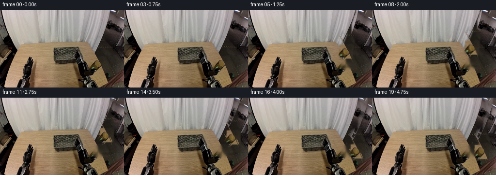
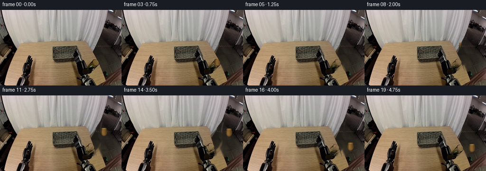
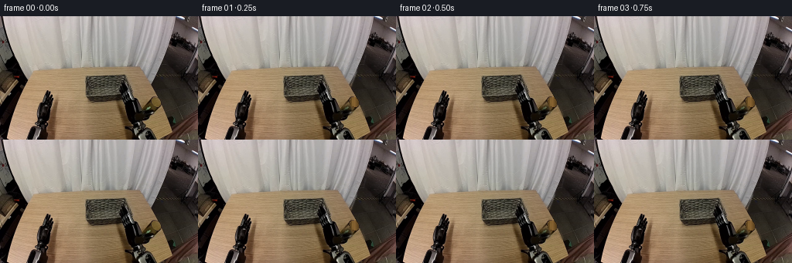
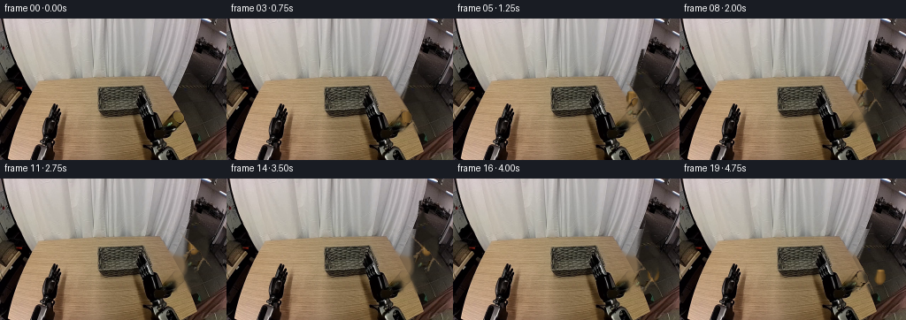
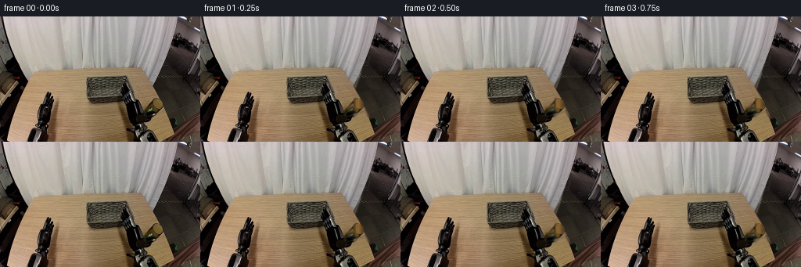
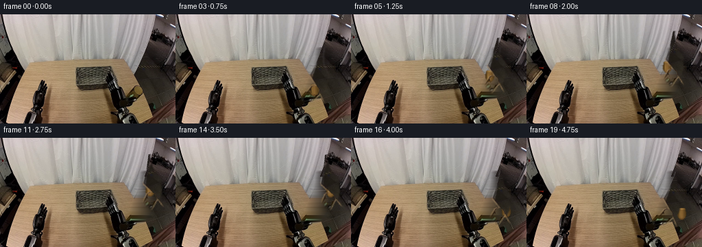
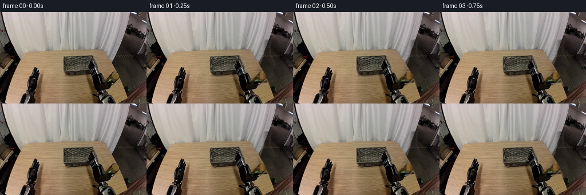

CODING AGENTS AS PIXEL WORLD MODELS
traex/DeepSeek-V4.1-Flash · common50_0036
点击播放 · 原生 RGB 像素
逐轮保存的候选
回放视频、检查图与代码变化。
每份候选均可单独播放。实际图片检查记录在下方工具轨迹中。
候选 01播放与检查图
点击播放 · 原生 RGB 像素

展开代码变化
--- 上一保存版本
+++ 本次保存版本
@@ -0,0 +1,222 @@
+"""Generate a rigid pick-and-place animation from the supplied RGB frame.
+
+The source image is the scene plate. The manipulated glass and the visible
+right-hand gripper are extracted into small layers, then moved with bilinear
+warps over an inpainted tabletop. This keeps the static workspace stable and
+avoids deforming the arm or the glass.
+"""
+
+from pathlib import Path
+
+import cv2
+import numpy as np
+from PIL import Image
+
+from artifact_io import save
+
+
+ROOT = Path(__file__).resolve().parent
+W, H = 256, 160
+N = 20
+
+
+def smoothstep(t):
+ t = np.clip(t, 0.0, 1.0)
+ return t * t * (3.0 - 2.0 * t)
+
+
+def ease_in_out(t):
+ return 0.5 - 0.5 * np.cos(np.pi * np.clip(t, 0.0, 1.0))
+
+
+def warp_layer(src, mask, dx, dy):
+ """Translate RGBA-like image and mask with subpixel accuracy."""
+ matrix = np.float32([[1.0, 0.0, dx], [0.0, 1.0, dy]])
+ image = cv2.warpAffine(
+ src, matrix, (W, H), flags=cv2.INTER_LINEAR,
+ borderMode=cv2.BORDER_REFLECT_101,
+ )
+ alpha = cv2.warpAffine(
+ mask.astype(np.float32), matrix, (W, H),
+ flags=cv2.INTER_LINEAR, borderMode=cv2.BORDER_CONSTANT,
+ )
+ return image.astype(np.float32), np.clip(alpha, 0.0, 1.0)
+
+
+def composite(base, layer, alpha):
+ return base * (1.0 - alpha[..., None]) + layer * alpha[..., None]
+
+
+def ellipse_mask(cx, cy, rx, ry, soft=1.2):
+ yy, xx = np.mgrid[:H, :W]
+ d = ((xx - cx) / rx) ** 2 + ((yy - cy) / ry) ** 2
+ return np.clip((1.0 + soft - d) / soft, 0.0, 1.0).astype(np.float32)
+
+
+def polygon_mask(points, soft=1.0):
+ mask = np.zeros((H, W), np.uint8)
+ cv2.fillPoly(mask, [np.int32(np.round(points))], 255)
+ if soft > 0:
+ mask = cv2.GaussianBlur(mask, (0, 0), soft)
+ return mask.astype(np.float32) / 255.0
+
+
+def make_scene_plate(source):
+ """Remove the movable glass from the plate with table-colored diffusion."""
+ plate = source.astype(np.float32).copy()
+ # Tight object silhouette, including its dark foot and top lip.
+ obj = np.zeros((H, W), np.uint8)
+ cv2.ellipse(obj, (202, 111), (12, 13), 0, 0, 360, 255, -1)
+ cv2.rectangle(obj, (191, 111), (213, 121), 255, -1)
+ obj = cv2.GaussianBlur(obj, (0, 0), 2.1)
+
+ # Use nearby tabletop pixels from both sides and above the object. A
+ # low-frequency synthetic fill is blended under the actual texture so the
+ # vacated area does not look like a pasted flat patch.
+ mask = (obj > 2).astype(np.uint8)
+ fill = cv2.inpaint(
+ source.astype(np.uint8), mask * 255, 5, cv2.INPAINT_TELEA
+ ).astype(np.float32)
+ grain = cv2.GaussianBlur(source.astype(np.float32) - fill, (0, 0), 2.0)
+ fill += grain * 0.20
+ alpha = np.clip(obj.astype(np.float32) / 255.0, 0.0, 1.0)
+ return composite(plate, fill, alpha)
+
+
+def make_object_layer(source):
+ """Extract the brown glass, including a narrow antialiased border."""
+ rgb = source.astype(np.float32)
+ r, g, b = rgb[..., 0], rgb[..., 1], rgb[..., 2]
+ yy, xx = np.mgrid[:H, :W]
+
+ shape = (((xx - 201.5) / 12.0) ** 2 + ((yy - 111.5) / 13.5) ** 2) <= 1.0
+ shape |= (xx >= 191) & (xx <= 213) & (yy >= 110) & (yy <= 122)
+ warm = (r > g * 1.07) & (g > b * 1.12) & (r > 42)
+ support = (warm | shape) & (xx >= 188) & (xx <= 216) & (yy >= 98) & (yy <= 126)
+ support = cv2.morphologyEx(
+ support.astype(np.uint8), cv2.MORPH_CLOSE, np.ones((3, 3), np.uint8)
+ )
+ support = cv2.dilate(support, np.ones((3, 3), np.uint8), iterations=1)
+ support &= ((xx >= 188) & (xx <= 216) & (yy >= 98) & (yy <= 126)).astype(np.uint8)
+ alpha = cv2.GaussianBlur(support.astype(np.float32), (0, 0), 0.75)
+ alpha = np.clip(alpha, 0.0, 1.0)
+ return rgb, alpha
+
+
+def make_gripper_layer(source, plate):
+ """Lift the right gripper assembly from the source plate."""
+ rgb = source.astype(np.float32)
+ # The gripper is a dark metal assembly descending from the upper right.
+ pts = np.array([
+ (208, 0), (226, 0), (222, 27), (217, 42), (213, 53),
+ (213, 72), (220, 88), (217, 105), (207, 119),
+ (197, 118), (193, 105), (198, 91), (204, 77),
+ (205, 61), (207, 45), (213, 27),
+ ], np.float32)
+ alpha = polygon_mask(pts, 1.3)
+ # Keep the dark parts but suppress bright background that entered the
+ # polygon between the two fingers.
+ lum = rgb.mean(axis=2)
+ dark = np.clip((128.0 - lum) / 38.0, 0.0, 1.0)
+ alpha *= 0.30 + 0.70 * dark
+ # Preserve the little bright jaw edges as well.
+ edge = cv2.Canny(source.astype(np.uint8), 35, 85)
+ edge = cv2.dilate(edge, np.ones((2, 2), np.uint8)).astype(np.float32) / 255.0
+ alpha = np.maximum(alpha, edge * ellipse_mask(205, 98, 18, 27, 0.9) * 0.75)
+ return rgb, np.clip(alpha, 0.0, 1.0)
+
+
+def make_shadow(cx, cy, rx, ry, strength):
+ yy, xx = np.mgrid[:H, :W]
+ d = ((xx - cx) / rx) ** 2 + ((yy - cy) / ry) ** 2
+ return (np.clip(1.0 - d, 0.0, 1.0) ** 1.6) * strength
+
+
+def render():
+ source = np.array(Image.open(ROOT / "first_frame.png").convert("RGB"))
+ plate = make_scene_plate(source)
+ obj_rgb, obj_alpha = make_object_layer(source)
+ grip_rgb, grip_alpha = make_gripper_layer(source, plate)
+
+ frames = []
+ # Pick at t=0.15, lift by 0.32, carry across by 0.70, lower and release
+ # at 0.86. A gentle settle leaves the glass stable for the final frames.
+ start = np.array([202.0, 111.0])
+ target = np.array([226.0, 111.0])
+ lift = 35.0
+
+ for i in range(N):
+ t = i / (N - 1)
+ if t <= 0.14:
+ p = smoothstep(t / 0.14)
+ x = start[0]
+ y = start[1]
+ z = 0.0
+ elif t <= 0.32:
+ p = smoothstep((t - 0.14) / 0.18)
+ x = start[0]
+ y = start[1]
+ z = lift * p
+ elif t <= 0.70:
+ p = smoothstep((t - 0.32) / 0.38)
+ x = start[0] + (target[0] - start[0]) * p
+ y = start[1]
+ z = lift
+ elif t <= 0.86:
+ p = smoothstep((t - 0.70) / 0.16)
+ x = target[0]
+ y = target[1]
+ z = lift * (1.0 - p)
+ else:
+ p = smoothstep((t - 0.86) / 0.14)
+ x = target[0]
+ y = target[1]
+ z = 0.0
+
+ # Slight perspective bounce only after contact; the glass itself
+ # remains a rigid layer throughout.
+ if t > 0.86:
+ z += 1.1 * np.sin((t - 0.86) / 0.14 * np.pi) * (1.0 - p)
+
+ frame = plate.copy()
+ dx = x - start[0]
+ dy = y - start[1] - z
+
+ # Contact shadow at the current projected position.
+ shadow = make_shadow(202 + dx, 122 - z * 0.20, 15.0, 4.3, 0.19)
+ frame *= (1.0 - shadow[..., None])
+
+ moved_obj, moved_alpha = warp_layer(obj_rgb, obj_alpha, dx, dy)
+ frame = composite(frame, moved_obj, moved_alpha * 0.98)
+
+ # The right gripper follows the carried glass, preserving its own
+ # shape and texture. Its displacement is deliberately damped during
+ # the final lowering so it opens away from the placed object.
+ grip_dx = dx * 0.88
+ grip_dy = dy * 0.94
+ if t > 0.83:
+ open_p = smoothstep((t - 0.83) / 0.17)
+ grip_dx += 2.8 * open_p
+ grip_dy -= 1.5 * open_p
+ moved_grip, moved_grip_alpha = warp_layer(
+ grip_rgb, grip_alpha, grip_dx, grip_dy
+ )
+ frame = composite(frame, moved_grip, moved_grip_alpha)
+
+ # Subtle highlights on the moving glass reinforce its cylindrical form.
+ if z > 1.0:
+ yy, xx = np.mgrid[:H, :W]
+ gx = x - 3.0
+ gy = y - z + 2.0
+ glint = np.exp(-(((xx - gx) / 1.8) ** 2 + ((yy - gy) / 7.0) ** 2))
+ frame += glint[..., None] * np.array([19.0, 15.0, 9.0])
+
+ if i == 0:
+ frame = source.astype(np.float32)
+ frames.append(np.clip(frame, 0, 255).astype(np.uint8))
+
+ return np.stack(frames)
+
+
+if __name__ == "__main__":
+ save(render(), ROOT)
候选 02播放与检查图
点击播放 · 原生 RGB 像素


展开代码变化
--- 上一保存版本
+++ 本次保存版本
@@ -43,6 +43,25 @@
return image.astype(np.float32), np.clip(alpha, 0.0, 1.0)
+def warp_layer_rotated(src, mask, angle, pivot):
+ """Rotate a layer rigidly around a world-space pivot."""
+ px, py = pivot
+ c, s = np.cos(angle), np.sin(angle)
+ matrix = np.float32([
+ [c, -s, px - c * px + s * py],
+ [s, c, py - s * px - c * py],
+ ])
+ image = cv2.warpAffine(
+ src, matrix, (W, H), flags=cv2.INTER_LINEAR,
+ borderMode=cv2.BORDER_REFLECT_101,
+ )
+ alpha = cv2.warpAffine(
+ mask.astype(np.float32), matrix, (W, H),
+ flags=cv2.INTER_LINEAR, borderMode=cv2.BORDER_CONSTANT,
+ )
+ return image.astype(np.float32), np.clip(alpha, 0.0, 1.0)
+
+
def composite(base, layer, alpha):
return base * (1.0 - alpha[..., None]) + layer * alpha[..., None]
@@ -61,69 +80,109 @@
return mask.astype(np.float32) / 255.0
-def make_scene_plate(source):
- """Remove the movable glass from the plate with table-colored diffusion."""
+def make_object_layer():
+ """Synthesize a small upright brown-glass cylinder.
+
+ The source view exposes only part of the object behind the gripper. A
+ compact cylindrical sprite is more stable than warping the occluded pixels.
+ """
+ yy, xx = np.mgrid[:H, :W]
+ cx, cy = 202.0, 111.0
+ rx, ry = 6.4, 8.7
+ nx = (xx - cx) / rx
+ ny = (yy - cy) / ry
+ body = (nx * nx + ny * ny) <= 1.0
+ # Rounded bottom and a flat top lip.
+ body &= ~((yy > 117) & (np.abs(nx) > 0.72))
+ top = (((xx - cx) / 5.8) ** 2 + ((yy - 104.2) / 2.0) ** 2) <= 1.0
+ shape = body | top
+
+ alpha = cv2.GaussianBlur(shape.astype(np.float32), (0, 0), 0.55)
+ alpha = np.clip(alpha, 0.0, 1.0)
+
+ # Warm transmitted light down the center, dark glass at the sides.
+ lateral = np.clip(1.0 - np.abs(nx), 0.0, 1.0)
+ vertical = np.clip((yy - 102.0) / 20.0, 0.0, 1.0)
+ base = np.stack([
+ 72.0 + 61.0 * lateral + 8.0 * vertical,
+ 51.0 + 45.0 * lateral + 7.0 * vertical,
+ 21.0 + 27.0 * lateral + 4.0 * vertical,
+ ], axis=-1)
+ # A narrow specular stripe and a darker foot preserve the glass form.
+ stripe = np.exp(-((xx - 199.3) / 1.15) ** 2) * np.exp(
+ -((yy - 110.0) / 7.0) ** 2
+ )
+ base += stripe[..., None] * np.array([25.0, 22.0, 12.0])
+ foot = np.exp(-((xx - cx) / 5.2) ** 2 - ((yy - 119.0) / 1.7) ** 2)
+ base -= foot[..., None] * np.array([37.0, 31.0, 16.0])
+ rim = np.exp(-((xx - cx) / 5.4) ** 2 - ((yy - 103.6) / 1.0) ** 2)
+ base += rim[..., None] * np.array([45.0, 38.0, 21.0])
+ return np.clip(base, 0.0, 255.0), alpha
+
+
+def make_arm_layers(source):
+ """Extract the fixed upper arm and the rigid lower wrist/gripper."""
+ rgb = source.astype(np.float32)
+ lum = 0.299 * rgb[..., 0] + 0.587 * rgb[..., 1] + 0.114 * rgb[..., 2]
+ yy, xx = np.mgrid[:H, :W]
+
+ arm_poly = np.array([
+ (205, 0), (229, 0), (225, 23), (218, 41), (214, 54),
+ (214, 73), (221, 89), (217, 108), (207, 123),
+ (195, 120), (192, 105), (199, 88), (205, 72),
+ (207, 55), (210, 36), (215, 17),
+ ], np.float32)
+ arm_area = polygon_mask(arm_poly, 1.0)
+ dark = np.clip((118.0 - lum) / 42.0, 0.0, 1.0)
+ alpha = arm_area * dark
+
+ # Preserve narrow metal highlights at the jaw without carrying the light
+ # background between the fingers.
+ edge = cv2.Canny(source.astype(np.uint8), 45, 105)
+ edge = cv2.dilate(edge, np.ones((2, 2), np.uint8)).astype(np.float32) / 255.0
+ edge *= ellipse_mask(205, 103, 16, 23, 0.8)
+ edge *= (lum < 155).astype(np.float32)
+ alpha = np.maximum(alpha, edge * 0.58)
+
+ # The brown glass is not part of the arm layer.
+ gold = (
+ (rgb[..., 0] > 58)
+ & (rgb[..., 1] > 38)
+ & (rgb[..., 2] < 82)
+ & (rgb[..., 0] > rgb[..., 1] * 1.13)
+ & (rgb[..., 1] > rgb[..., 2] * 1.30)
+ )
+ gold_area = ellipse_mask(202, 111, 8.0, 10.0, 1.0)
+ alpha *= 1.0 - 0.92 * gold.astype(np.float32) * gold_area
+ alpha = np.clip(alpha, 0.0, 1.0)
+
+ upper = alpha * (yy < 57)
+ lower = alpha * (yy >= 50)
+ return rgb, upper, lower
+
+
+def make_scene_plate(source, lower_arm_alpha, object_alpha):
+ """Reconstruct the area vacated by the wrist and manipulated object."""
plate = source.astype(np.float32).copy()
- # Tight object silhouette, including its dark foot and top lip.
- obj = np.zeros((H, W), np.uint8)
- cv2.ellipse(obj, (202, 111), (12, 13), 0, 0, 360, 255, -1)
- cv2.rectangle(obj, (191, 111), (213, 121), 255, -1)
- obj = cv2.GaussianBlur(obj, (0, 0), 2.1)
-
- # Use nearby tabletop pixels from both sides and above the object. A
- # low-frequency synthetic fill is blended under the actual texture so the
- # vacated area does not look like a pasted flat patch.
- mask = (obj > 2).astype(np.uint8)
+ movable = ((lower_arm_alpha > 0.18) | (object_alpha > 0.18)).astype(np.uint8)
+ movable = cv2.dilate(movable, np.ones((3, 3), np.uint8), iterations=1)
fill = cv2.inpaint(
- source.astype(np.uint8), mask * 255, 5, cv2.INPAINT_TELEA
+ source.astype(np.uint8), movable * 255, 7, cv2.INPAINT_TELEA
).astype(np.float32)
- grain = cv2.GaussianBlur(source.astype(np.float32) - fill, (0, 0), 2.0)
- fill += grain * 0.20
- alpha = np.clip(obj.astype(np.float32) / 255.0, 0.0, 1.0)
- return composite(plate, fill, alpha)
-
-
-def make_object_layer(source):
- """Extract the brown glass, including a narrow antialiased border."""
- rgb = source.astype(np.float32)
- r, g, b = rgb[..., 0], rgb[..., 1], rgb[..., 2]
- yy, xx = np.mgrid[:H, :W]
-
- shape = (((xx - 201.5) / 12.0) ** 2 + ((yy - 111.5) / 13.5) ** 2) <= 1.0
- shape |= (xx >= 191) & (xx <= 213) & (yy >= 110) & (yy <= 122)
- warm = (r > g * 1.07) & (g > b * 1.12) & (r > 42)
- support = (warm | shape) & (xx >= 188) & (xx <= 216) & (yy >= 98) & (yy <= 126)
- support = cv2.morphologyEx(
- support.astype(np.uint8), cv2.MORPH_CLOSE, np.ones((3, 3), np.uint8)
- )
- support = cv2.dilate(support, np.ones((3, 3), np.uint8), iterations=1)
- support &= ((xx >= 188) & (xx <= 216) & (yy >= 98) & (yy <= 126)).astype(np.uint8)
- alpha = cv2.GaussianBlur(support.astype(np.float32), (0, 0), 0.75)
- alpha = np.clip(alpha, 0.0, 1.0)
- return rgb, alpha
-
-
-def make_gripper_layer(source, plate):
- """Lift the right gripper assembly from the source plate."""
- rgb = source.astype(np.float32)
- # The gripper is a dark metal assembly descending from the upper right.
- pts = np.array([
- (208, 0), (226, 0), (222, 27), (217, 42), (213, 53),
- (213, 72), (220, 88), (217, 105), (207, 119),
- (197, 118), (193, 105), (198, 91), (204, 77),
- (205, 61), (207, 45), (213, 27),
- ], np.float32)
- alpha = polygon_mask(pts, 1.3)
- # Keep the dark parts but suppress bright background that entered the
- # polygon between the two fingers.
- lum = rgb.mean(axis=2)
- dark = np.clip((128.0 - lum) / 38.0, 0.0, 1.0)
- alpha *= 0.30 + 0.70 * dark
- # Preserve the little bright jaw edges as well.
- edge = cv2.Canny(source.astype(np.uint8), 35, 85)
- edge = cv2.dilate(edge, np.ones((2, 2), np.uint8)).astype(np.float32) / 255.0
- alpha = np.maximum(alpha, edge * ellipse_mask(205, 98, 18, 27, 0.9) * 0.75)
- return rgb, np.clip(alpha, 0.0, 1.0)
+
+ # Inpainting smooths across the wall/table boundary; restore the broad
+ # horizontal lighting bands before blending in local texture.
+ yy = np.arange(H, dtype=np.float32)[:, None, None]
+ fill = 0.82 * fill + 0.18 * source.astype(np.float32)
+ # Add restrained texture noise sampled from neighboring table pixels.
+ rng = np.random.default_rng(7)
+ noise = cv2.GaussianBlur(
+ rng.normal(0.0, 3.1, (H, W)).astype(np.float32), (0, 0), 1.5
+ )
+ table_weight = np.clip((yy - 66.0) / 8.0, 0.0, 1.0)
+ fill += noise[..., None] * table_weight * 0.42
+ soft = cv2.GaussianBlur(movable.astype(np.float32), (0, 0), 1.2)
+ return composite(plate, fill, np.clip(soft, 0.0, 1.0))
def make_shadow(cx, cy, rx, ry, strength):
@@ -134,82 +193,78 @@
def render():
source = np.array(Image.open(ROOT / "first_frame.png").convert("RGB"))
- plate = make_scene_plate(source)
- obj_rgb, obj_alpha = make_object_layer(source)
- grip_rgb, grip_alpha = make_gripper_layer(source, plate)
+ obj_rgb, obj_alpha = make_object_layer()
+ arm_rgb, upper_alpha, lower_alpha = make_arm_layers(source)
+ plate = make_scene_plate(source, lower_alpha, obj_alpha)
frames = []
- # Pick at t=0.15, lift by 0.32, carry across by 0.70, lower and release
- # at 0.86. A gentle settle leaves the glass stable for the final frames.
+ # A compact pick/lift/carry/lower cycle: approach, grip, lift, traverse
+ # right, lower, release, then settle.
start = np.array([202.0, 111.0])
target = np.array([226.0, 111.0])
- lift = 35.0
+ lift = 34.0
+ pivot = np.array([209.0, 50.0])
+ max_angle = np.deg2rad(12.5)
for i in range(N):
t = i / (N - 1)
- if t <= 0.14:
- p = smoothstep(t / 0.14)
+ if t <= 0.16:
+ p = smoothstep(t / 0.16)
x = start[0]
y = start[1]
z = 0.0
- elif t <= 0.32:
- p = smoothstep((t - 0.14) / 0.18)
+ angle = 0.0
+ elif t <= 0.34:
+ p = smoothstep((t - 0.16) / 0.18)
x = start[0]
y = start[1]
z = lift * p
- elif t <= 0.70:
- p = smoothstep((t - 0.32) / 0.38)
+ angle = max_angle * 0.18 * p
+ elif t <= 0.72:
+ p = smoothstep((t - 0.34) / 0.38)
x = start[0] + (target[0] - start[0]) * p
y = start[1]
z = lift
- elif t <= 0.86:
- p = smoothstep((t - 0.70) / 0.16)
+ angle = max_angle * (0.18 + 0.82 * p)
+ elif t <= 0.87:
+ p = smoothstep((t - 0.72) / 0.15)
x = target[0]
y = target[1]
z = lift * (1.0 - p)
+ angle = max_angle * (1.0 - 0.62 * p)
else:
- p = smoothstep((t - 0.86) / 0.14)
+ p = smoothstep((t - 0.87) / 0.13)
x = target[0]
y = target[1]
z = 0.0
-
- # Slight perspective bounce only after contact; the glass itself
- # remains a rigid layer throughout.
- if t > 0.86:
- z += 1.1 * np.sin((t - 0.86) / 0.14 * np.pi) * (1.0 - p)
+ angle = max_angle * 0.38 * (1.0 - p)
frame = plate.copy()
dx = x - start[0]
dy = y - start[1] - z
# Contact shadow at the current projected position.
- shadow = make_shadow(202 + dx, 122 - z * 0.20, 15.0, 4.3, 0.19)
+ shadow = make_shadow(202 + dx, 121.5 - z * 0.18, 8.5, 2.8, 0.17)
frame *= (1.0 - shadow[..., None])
moved_obj, moved_alpha = warp_layer(obj_rgb, obj_alpha, dx, dy)
- frame = composite(frame, moved_obj, moved_alpha * 0.98)
-
- # The right gripper follows the carried glass, preserving its own
- # shape and texture. Its displacement is deliberately damped during
- # the final lowering so it opens away from the placed object.
- grip_dx = dx * 0.88
- grip_dy = dy * 0.94
- if t > 0.83:
- open_p = smoothstep((t - 0.83) / 0.17)
- grip_dx += 2.8 * open_p
- grip_dy -= 1.5 * open_p
- moved_grip, moved_grip_alpha = warp_layer(
- grip_rgb, grip_alpha, grip_dx, grip_dy
+ frame = composite(frame, moved_obj, moved_alpha)
+
+ moved_lower, moved_lower_alpha = warp_layer_rotated(
+ arm_rgb, lower_alpha, angle, pivot
)
- frame = composite(frame, moved_grip, moved_grip_alpha)
+ frame = composite(frame, moved_lower, moved_lower_alpha)
+
+ # Keep the upper arm fixed at the shoulder joint.
+ frame = composite(frame, arm_rgb, upper_alpha)
# Subtle highlights on the moving glass reinforce its cylindrical form.
if z > 1.0:
yy, xx = np.mgrid[:H, :W]
- gx = x - 3.0
- gy = y - z + 2.0
- glint = np.exp(-(((xx - gx) / 1.8) ** 2 + ((yy - gy) / 7.0) ** 2))
- frame += glint[..., None] * np.array([19.0, 15.0, 9.0])
+ gx = x - 2.6
+ gy = y - z + 1.0
+ glint = np.exp(-(((xx - gx) / 1.0) ** 2 + ((yy - gy) / 5.2) ** 2))
+ frame += glint[..., None] * np.array([17.0, 13.0, 8.0])
if i == 0:
frame = source.astype(np.float32)
候选 03播放与检查图
点击播放 · 原生 RGB 像素


展开代码变化
--- 上一保存版本
+++ 本次保存版本
@@ -43,13 +43,13 @@
return image.astype(np.float32), np.clip(alpha, 0.0, 1.0)
-def warp_layer_rotated(src, mask, angle, pivot):
- """Rotate a layer rigidly around a world-space pivot."""
+def warp_layer_rotated(src, mask, angle, pivot, tx=0.0, ty=0.0):
+ """Rotate a layer rigidly around a pivot, then translate the joint."""
px, py = pivot
c, s = np.cos(angle), np.sin(angle)
matrix = np.float32([
- [c, -s, px - c * px + s * py],
- [s, c, py - s * px - c * py],
+ [c, -s, px - c * px + s * py + tx],
+ [s, c, py - s * px - c * py + ty],
])
image = cv2.warpAffine(
src, matrix, (W, H), flags=cv2.INTER_LINEAR,
@@ -204,7 +204,7 @@
target = np.array([226.0, 111.0])
lift = 34.0
pivot = np.array([209.0, 50.0])
- max_angle = np.deg2rad(12.5)
+ max_angle = np.deg2rad(18.0)
for i in range(N):
t = i / (N - 1)
@@ -213,31 +213,31 @@
x = start[0]
y = start[1]
z = 0.0
- angle = 0.0
+ angle = -max_angle * 0.10 * p
elif t <= 0.34:
p = smoothstep((t - 0.16) / 0.18)
x = start[0]
y = start[1]
z = lift * p
- angle = max_angle * 0.18 * p
+ angle = -max_angle * (0.10 + 0.42 * p)
elif t <= 0.72:
p = smoothstep((t - 0.34) / 0.38)
x = start[0] + (target[0] - start[0]) * p
y = start[1]
z = lift
- angle = max_angle * (0.18 + 0.82 * p)
+ angle = -max_angle * (0.52 + 0.48 * p)
elif t <= 0.87:
p = smoothstep((t - 0.72) / 0.15)
x = target[0]
y = target[1]
z = lift * (1.0 - p)
- angle = max_angle * (1.0 - 0.62 * p)
+ angle = -max_angle * (1.0 - 0.52 * p)
else:
p = smoothstep((t - 0.87) / 0.13)
x = target[0]
y = target[1]
z = 0.0
- angle = max_angle * 0.38 * (1.0 - p)
+ angle = -max_angle * 0.48 * (1.0 - p)
frame = plate.copy()
dx = x - start[0]
@@ -251,7 +251,8 @@
frame = composite(frame, moved_obj, moved_alpha)
moved_lower, moved_lower_alpha = warp_layer_rotated(
- arm_rgb, lower_alpha, angle, pivot
+ arm_rgb, lower_alpha, angle, pivot,
+ tx=dx * 0.20, ty=-z * 0.72,
)
frame = composite(frame, moved_lower, moved_lower_alpha)
候选 04播放与检查图
点击播放 · 原生 RGB 像素


展开代码变化
--- 上一保存版本
+++ 本次保存版本
@@ -8,9 +8,8 @@
from pathlib import Path
-import cv2
import numpy as np
-from PIL import Image
+from PIL import Image, ImageDraw, ImageFilter
from artifact_io import save
@@ -31,35 +30,37 @@
def warp_layer(src, mask, dx, dy):
"""Translate RGBA-like image and mask with subpixel accuracy."""
- matrix = np.float32([[1.0, 0.0, dx], [0.0, 1.0, dy]])
- image = cv2.warpAffine(
- src, matrix, (W, H), flags=cv2.INTER_LINEAR,
- borderMode=cv2.BORDER_REFLECT_101,
+ matrix = np.array([[1.0, 0.0, dx], [0.0, 1.0, dy], [0.0, 0.0, 1.0]])
+ return affine_warp(src, mask, matrix)
+
+
+def affine_warp(src, mask, matrix):
+ """Apply a forward affine transform using inverse PIL sampling."""
+ inverse = np.linalg.inv(matrix)
+ coeffs = tuple(float(v) for v in inverse[:2].ravel())
+ image = Image.fromarray(np.clip(src, 0, 255).astype(np.uint8))
+ image = image.transform(
+ (W, H), Image.Transform.AFFINE, coeffs,
+ resample=Image.Resampling.BILINEAR, fillcolor=(0, 0, 0),
)
- alpha = cv2.warpAffine(
- mask.astype(np.float32), matrix, (W, H),
- flags=cv2.INTER_LINEAR, borderMode=cv2.BORDER_CONSTANT,
+ alpha = Image.fromarray((np.clip(mask, 0, 1) * 255).astype(np.uint8))
+ alpha = alpha.transform(
+ (W, H), Image.Transform.AFFINE, coeffs,
+ resample=Image.Resampling.BILINEAR, fillcolor=0,
)
- return image.astype(np.float32), np.clip(alpha, 0.0, 1.0)
+ return np.asarray(image, np.float32), np.asarray(alpha, np.float32) / 255.0
def warp_layer_rotated(src, mask, angle, pivot, tx=0.0, ty=0.0):
"""Rotate a layer rigidly around a pivot, then translate the joint."""
px, py = pivot
c, s = np.cos(angle), np.sin(angle)
- matrix = np.float32([
+ matrix = np.array([
[c, -s, px - c * px + s * py + tx],
[s, c, py - s * px - c * py + ty],
+ [0.0, 0.0, 1.0],
])
- image = cv2.warpAffine(
- src, matrix, (W, H), flags=cv2.INTER_LINEAR,
- borderMode=cv2.BORDER_REFLECT_101,
- )
- alpha = cv2.warpAffine(
- mask.astype(np.float32), matrix, (W, H),
- flags=cv2.INTER_LINEAR, borderMode=cv2.BORDER_CONSTANT,
- )
- return image.astype(np.float32), np.clip(alpha, 0.0, 1.0)
+ return affine_warp(src, mask, matrix)
def composite(base, layer, alpha):
@@ -73,11 +74,30 @@
def polygon_mask(points, soft=1.0):
- mask = np.zeros((H, W), np.uint8)
- cv2.fillPoly(mask, [np.int32(np.round(points))], 255)
+ image = Image.new("L", (W, H), 0)
+ draw = ImageDraw.Draw(image)
+ draw.polygon([tuple(map(float, point)) for point in points], fill=255)
if soft > 0:
- mask = cv2.GaussianBlur(mask, (0, 0), soft)
- return mask.astype(np.float32) / 255.0
+ image = image.filter(ImageFilter.GaussianBlur(soft))
+ return np.asarray(image, np.float32) / 255.0
+
+
+def blur(array, radius):
+ image = Image.fromarray(np.clip(array, 0, 255).astype(np.uint8))
+ return np.asarray(image.filter(ImageFilter.GaussianBlur(radius)), np.float32)
+
+
+def dilate_binary(mask, iterations=1):
+ result = mask.astype(bool)
+ for _ in range(iterations):
+ padded = np.pad(result, 1, mode="edge")
+ result = (
+ padded[1:-1, 1:-1] | padded[:-2, 1:-1] | padded[2:, 1:-1]
+ | padded[1:-1, :-2] | padded[1:-1, 2:]
+ | padded[:-2, :-2] | padded[:-2, 2:]
+ | padded[2:, :-2] | padded[2:, 2:]
+ )
+ return result.astype(np.uint8)
def make_object_layer():
@@ -97,8 +117,7 @@
top = (((xx - cx) / 5.8) ** 2 + ((yy - 104.2) / 2.0) ** 2) <= 1.0
shape = body | top
- alpha = cv2.GaussianBlur(shape.astype(np.float32), (0, 0), 0.55)
- alpha = np.clip(alpha, 0.0, 1.0)
+ alpha = blur(shape.astype(np.float32) * 255.0, 0.55) / 255.0
# Warm transmitted light down the center, dark glass at the sides.
lateral = np.clip(1.0 - np.abs(nx), 0.0, 1.0)
@@ -138,8 +157,9 @@
# Preserve narrow metal highlights at the jaw without carrying the light
# background between the fingers.
- edge = cv2.Canny(source.astype(np.uint8), 45, 105)
- edge = cv2.dilate(edge, np.ones((2, 2), np.uint8)).astype(np.float32) / 255.0
+ gy, gx = np.gradient(lum)
+ edge = (np.hypot(gx, gy) > 34.0).astype(np.uint8)
+ edge = dilate_binary(edge, 1).astype(np.float32)
edge *= ellipse_mask(205, 103, 16, 23, 0.8)
edge *= (lum < 155).astype(np.float32)
alpha = np.maximum(alpha, edge * 0.58)
@@ -158,30 +178,46 @@
upper = alpha * (yy < 57)
lower = alpha * (yy >= 50)
- return rgb, upper, lower
-
-
-def make_scene_plate(source, lower_arm_alpha, object_alpha):
+ lower_area = arm_area * (yy >= 50)
+ return rgb, upper, lower, lower_area
+
+
+def make_scene_plate(source, lower_arm_area, object_alpha):
"""Reconstruct the area vacated by the wrist and manipulated object."""
plate = source.astype(np.float32).copy()
- movable = ((lower_arm_alpha > 0.18) | (object_alpha > 0.18)).astype(np.uint8)
- movable = cv2.dilate(movable, np.ones((3, 3), np.uint8), iterations=1)
- fill = cv2.inpaint(
- source.astype(np.uint8), movable * 255, 7, cv2.INPAINT_TELEA
- ).astype(np.float32)
-
- # Inpainting smooths across the wall/table boundary; restore the broad
- # horizontal lighting bands before blending in local texture.
+ movable = ((lower_arm_area > 0.18) | (object_alpha > 0.18)).astype(np.uint8)
+ movable = dilate_binary(movable, 2)
+
+ # Fill each row by interpolating between the nearest unmasked table pixels.
+ # This preserves the wall/table bands and avoids flat rectangular patches.
+ fill = plate.copy()
+ for y in range(H):
+ row_mask = movable[y].astype(bool)
+ if not row_mask.any():
+ continue
+ valid = np.flatnonzero(~row_mask)
+ if len(valid) < 2:
+ continue
+ for x in np.flatnonzero(row_mask):
+ left = valid[valid < x]
+ right = valid[valid > x]
+ if len(left) and len(right):
+ x0, x1 = left[-1], right[0]
+ p = (x - x0) / (x1 - x0)
+ fill[y, x] = plate[y, x0] * (1.0 - p) + plate[y, x1] * p
+ elif len(left):
+ fill[y, x] = plate[y, left[-1]]
+ elif len(right):
+ fill[y, x] = plate[y, right[0]]
+
+ # Restore fine grain from rows above and below without carrying the wrist.
+ fill = 0.86 * fill + 0.14 * blur(fill, 1.0)
+ rng = np.random.default_rng(7)
+ noise = blur(rng.normal(0.0, 3.0, (H, W)).astype(np.float32) + 128.0, 1.4) - 128.0
yy = np.arange(H, dtype=np.float32)[:, None, None]
- fill = 0.82 * fill + 0.18 * source.astype(np.float32)
- # Add restrained texture noise sampled from neighboring table pixels.
- rng = np.random.default_rng(7)
- noise = cv2.GaussianBlur(
- rng.normal(0.0, 3.1, (H, W)).astype(np.float32), (0, 0), 1.5
- )
table_weight = np.clip((yy - 66.0) / 8.0, 0.0, 1.0)
- fill += noise[..., None] * table_weight * 0.42
- soft = cv2.GaussianBlur(movable.astype(np.float32), (0, 0), 1.2)
+ fill += noise[..., None] * table_weight * 0.36
+ soft = blur(movable.astype(np.float32) * 255.0, 1.1) / 255.0
return composite(plate, fill, np.clip(soft, 0.0, 1.0))
@@ -194,8 +230,8 @@
def render():
source = np.array(Image.open(ROOT / "first_frame.png").convert("RGB"))
obj_rgb, obj_alpha = make_object_layer()
- arm_rgb, upper_alpha, lower_alpha = make_arm_layers(source)
- plate = make_scene_plate(source, lower_alpha, obj_alpha)
+ arm_rgb, upper_alpha, lower_alpha, lower_area = make_arm_layers(source)
+ plate = make_scene_plate(source, lower_area, obj_alpha)
frames = []
# A compact pick/lift/carry/lower cycle: approach, grip, lift, traverse
可观测工具轨迹
实际执行的命令与返回图片。
命令 1exit 0
/bin/bash -c "pwd && rg --files -g 'prompt.txt' -g 'GENERATION_RULES.md' -g 'first_frame.png' -g '"'!node_modules'"'"
命令 2exit 0
/bin/bash -c 'ls -la'
命令 3exit 0
/bin/bash -c 'cat prompt.txt'
命令 4exit 0
/bin/bash -c 'cat GENERATION_RULES.md'
命令 5exit 0
/bin/bash -c "cat task_spec.json && sed -n '1,240p' artifact_io.py"
命令 6exit 127
/bin/bash -c "file first_frame.png && python - <<'PY'
from PIL import Image
im=Image.open('first_frame.png')
print(im.size, im.mode)
print(im.getbbox())
PY"命令 7exit 0
/bin/bash -c "python - <<'PY'
from PIL import Image
import numpy as np
im=np.array(Image.open('first_frame.png').convert('RGB'))
print(im.shape, im.dtype)
# most common quantized colors
q=(im//16)*16
colors, counts=np.unique(q.reshape(-1,3),axis=0,return_counts=True)
idx=np.argsort(counts)[-30:][::-1]
for c,n in zip(colors[idx],counts[idx]): print(tuple(c), int(n), f'{n/im.shape[0]/im.shape[1]:.3%}')
# row/column summaries, mean RGB per 8x8 block as compact hex
for y in range(0,160,8):
row=[]
for x in range(0,256,8):
b=im[y:y+8,x:x+8].mean((0,1)).astype(int)
row.append('%02x%02x%02x'%tuple(b))
print(f'{y:03d}', ' '.join(row))
PY"命令 8exit 0
/bin/bash -c "python - <<'PY'
from PIL import Image
import numpy as np
im=np.array(Image.open('first_frame.png').convert('RGB')).astype(float)
# downscale to 128x80 via PIL LANCZOS
g=np.array(Image.fromarray(im.astype('uint8')).convert('L').resize((128,80),Image.Resampling.LANCZOS))
chars='@%#*+=-:. '
for row in g:
print(''.join(chars[min(len(chars)-1,int(v/256*len(chars)))] for v in row))
PY"命令 9exit 0
/bin/bash -c "python - <<'PY'
try:
import cv2; print('cv2',cv2.__version__)
except Exception as e: print('no cv2',e)
try:
import scipy; print('scipy',scipy.__version__)
except Exception as e: print('no scipy',e)
PY"命令 10exit 0
/bin/bash -c "python - <<'PY'
from PIL import Image
import numpy as np
im=np.array(Image.open('first_frame.png').convert('RGB'))
# Edge-strength ASCII on grayscale; 2 chars per 4x4 cell
from PIL import ImageFilter
e=np.array(Image.open('first_frame.png').convert('L').filter(ImageFilter.FIND_EDGES)).astype(float)
e=np.array(Image.fromarray(e.astype('uint8')).resize((128,80),Image.Resampling.BOX))
chars=' .:-=+*#%@'
for row in e:
print(''.join(chars[min(9,int(v/16))] for v in row))
PY"命令 11exit 0
/bin/bash -c "python - <<'PY'
from PIL import Image
import numpy as np
im=np.array(Image.open('first_frame.png').convert('RGB')).astype(np.float32)
# assign characters by hue/value/saturation groups
import colorsys
hsv=np.zeros_like(im)
mx=im.max(2); mn=im.min(2); d=mx-mn
# vectorized HSV hue
r,g,b=im[:,:,0],im[:,:,1],im[:,:,2]
h=np.zeros_like(mx); s=np.where(mx>0,d/np.maximum(mx,1),0); v=mx/255
mask=d>0
idx=(mx==r)&mask; h[idx]=((g[idx]-b[idx])/d[idx])%6
idx=(mx==g)&mask; h[idx]=(b[idx]-r[idx])/d[idx]+2
idx=(mx==b)&mask; h[idx]=(r[idx]-g[idx])/d[idx]+4
h=h*60
# classification
out=[]
for y in range(0,160,4):
row=''
for x in range(0,256,4):
hh=h[y:y+4,x:x+4].mean(); ss=s[y:y+4,x:x+4].mean(); vv=v[y:y+4,x:x+4].mean()
if vv<.12: ch='K'
elif ss<.10: ch='#' if vv>.75 else ('O' if vv>.45 else ('o' if vv>.2 else '.'))
elif 15<=hh<45: ch='Y' if vv>.5 else 'y'
elif 45<=hh<75: ch='B' if vv>.45 else 'b'
elif hh<15 or hh>=345: ch='R'
elif 75<=hh<170: ch='G'
elif 170<=hh<260: ch='C'
else: ch='M'
row+=ch
out.append(row)
print('\\n'.join(out))
PY"命令 12exit 0
/bin/bash -c "python - <<'PY'
import cv2, numpy as np
im=cv2.imread('first_frame.png')
g=cv2.cvtColor(im,cv2.COLOR_BGR2GRAY)
g=cv2.GaussianBlur(g,(3,3),0)
for lo,hi in [(20,40),(30,60),(50,100)]:
e=cv2.Canny(g,lo,hi)
cs,_=cv2.findContours(e,cv2.RETR_LIST,cv2.CHAIN_APPROX_SIMPLE)
print('canny',lo,hi,'edges',e.sum()//255,'contours',len(cs))
vals=[]
for c in cs:
x,y,w,h=cv2.boundingRect(c); a=cv2.contourArea(c); p=cv2.arcLength(c,True)
if a>20 and w>3 and h>3: vals.append((a,x,y,w,h,round(a/max(w*h,1),2)))
for v in sorted(vals,reverse=True)[:30]: print(v)
PY"命令 13exit 0
/bin/bash -c "python - <<'PY'
import cv2, numpy as np
im=cv2.imread('first_frame.png')
g=cv2.cvtColor(im,cv2.COLOR_BGR2GRAY)
g=cv2.GaussianBlur(g,(3,3),0)
e=cv2.Canny(g,35,80)
lines=cv2.HoughLinesP(e,1,np.pi/180,threshold=20,minLineLength=12,maxLineGap=4)
vals=[]
for l in lines[:,0]:
x1,y1,x2,y2=map(int,l); length=((x2-x1)**2+(y2-y1)**2)**.5
ang=np.degrees(np.arctan2(y2-y1,x2-x1))
vals.append((round(length,1),round(ang,1),x1,y1,x2,y2))
for v in sorted(vals,reverse=True)[:120]: print(v)
PY"命令 14exit 0
/bin/bash -c "python - <<'PY'
from PIL import Image
import numpy as np
im=np.array(Image.open('first_frame.png').convert('RGB'))
# Print small crops as RGB letters grouped; each pixel represented by color category, at 2x2 avg for x ranges
# also print coordinate grid at 8 px spacing for visual reasoning
for y0,y1,x0,x1 in [(0,80,0,110),(0,80,100,210),(0,80,200,256),(70,160,90,210)]:
print(f'CROP {x0}:{x1} {y0}:{y1}')
for y in range(y0,y1,2):
row=''
for x in range(x0,x1,2):
b=im[y:y+2,x:x+2].mean((0,1)); r,g,bl=b
v=max(b); d=v-min(b); s=d/max(v,1)
if v<20: c=' '
elif s<18: c='.'
elif r>g*1.35 and r>bl*1.15: c='R'
elif g>r*1.1: c='G'
elif r>g and g>bl*1.15: c='y'
elif r>g and g>bl: c='o'
else: c='c'
row+=c
print(f'{y:03d} '+row)
PY"命令 15exit 0
/bin/bash -c "python - <<'PY'
from PIL import Image
import numpy as np
im=np.array(Image.open('first_frame.png').convert('RGB'))
pts=[(0,0),(50,20),(100,20),(105,20),(110,20),(128,20),(170,20),(200,20),(240,20),
(10,70),(50,70),(100,70),(120,80),(140,80),(160,80),(190,90),(200,105),(210,110),(220,120),(240,120),
(20,110),(40,120),(60,140),(80,120),(100,140),(120,140),(140,140),(160,120),(180,140),(200,140),(220,140)]
for x,y in pts:
print(f'({x:3},{y:3})',tuple(im[y,x]))
PY"命令 16exit 0
/bin/bash -c "python - <<'PY'
import cv2,numpy as np
im=cv2.imread('first_frame.png')
Z=im.reshape(-1,3).astype(np.float32)
criteria=(cv2.TERM_CRITERIA_EPS+cv2.TERM_CRITERIA_MAX_ITER,50,.2)
for k in [8,12,16]:
_,lab,cent=cv2.kmeans(Z,k,None,criteria,5,cv2.KMEANS_PP_CENTERS)
lab=lab.reshape(im.shape[:2])
print('\\nK',k)
for i,c in enumerate(cent):
mask=(lab==i).astype(np.uint8)
n=int(mask.sum())
cs,_=cv2.findContours(mask,cv2.RETR_EXTERNAL,cv2.CHAIN_APPROX_SIMPLE)
comps=[]
for cc in cs:
x,y,w,h=cv2.boundingRect(cc); a=cv2.contourArea(cc)
if a>40: comps.append((round(a),x,y,w,h))
comps=sorted(comps,reverse=True)[:6]
print(i,'BGR',tuple(int(v) for v in c),'n',n,'comps',comps)
PY"命令 17exit 0
/bin/bash -c "python - <<'PY'
from PIL import Image
import numpy as np
im=np.array(Image.open('first_frame.png').convert('RGB')).astype(np.float32)
# 2x2 cells rendered by dominant bucket among semantic-ish ranges with brightness chars
for y in range(0,160,2):
row=''
for x in range(0,256,2):
p=im[y:y+2,x:x+2].mean((0,1)); r,g,b=p
v=p.mean(); sat=p.max()-p.min()
if x<100: ch=' '
elif y<45: ch=' '
elif sat<10: ch='.' if v>50 else ','
elif r>g*1.25 and g>b*1.08:
ch='W' if v>135 else ('w' if v>90 else ('d' if v>40 else ' '))
elif r>g*1.07 and g>b*1.08:
ch='O' if v>130 else ('o' if v>80 else ('p' if v>35 else ' '))
elif r>g*1.08 and b>=g*1.05:
ch='M' if v>130 else ('m' if v>80 else 'r')
elif abs(r-g)<10 and abs(g-b)<10:
ch='.' if v>100 else ','
else: ch='?'
row+=ch
print(f'{y:03d} {row}')
PY"命令 18exit 0
/bin/bash -c "python - <<'PY'
from PIL import Image
import numpy as np
im=np.array(Image.open('first_frame.png').convert('RGB')).astype(np.float32)
# print exact sampled RGB/HSL on grid x=100..250 step5, y=40..158 step5 compact HSV code
import colorsys
for y in range(40,160,5):
vals=[]
for x in range(100,256,5):
p=im[y:y+5,x:x+5].mean((0,1))/255
h,s,v=colorsys.rgb_to_hsv(*p)
if v<.08: c=' '
elif s<.08: c='::' if v>.55 else ('..' if v>.25 else ',,')
else:
hue=int(h*12)%12
# hex digits hue, uppercase high value
c='0123456789AB'[hue]+('H' if v>.65 else ('m' if v>.35 else 'l'))
vals.append(c)
print(f'{y:03d} '+' '.join(vals))
PY"命令 19exit 0
/bin/bash -c "python - <<'PY'
import cv2, numpy as np
im=cv2.imread('first_frame.png')
# test components of selected region. Print masks per 2x2 at x 190:256 y20:140 based on saturation/hue/value
rgb=im[:,:,::-1]
r,g,b=rgb[:,:,0].astype(float),rgb[:,:,1].astype(float),rgb[:,:,2].astype(float)
mx=np.maximum.reduce([r,g,b]); mn=np.minimum.reduce([r,g,b]); s=(mx-mn)/np.maximum(mx,1)
# gray pixels = saturation low, brighter
for y in range(20,140,2):
row=''
for x in range(190,256,2):
rr=r[y:y+2,x:x+2].mean(); gg=g[y:y+2,x:x+2].mean(); bb=b[y:y+2,x:x+2].mean(); ss=s[y:y+2,x:x+2].mean(); vv=mx[y:y+2,x:x+2].mean()
if ss<.10: ch='@' if vv>180 else ('#' if vv>130 else ('+' if vv>80 else ('-' if vv>40 else ' ')))
elif rr>gg*1.2 and gg>bb*1.1: ch='B' if vv>140 else ('b' if vv>70 else 'd')
else: ch='?'
row+=ch
print(f'{y:03d} {row}')
PY"命令 20exit 0
/bin/bash -c "python - <<'PY'
from PIL import Image
import numpy as np
im=np.array(Image.open('first_frame.png').convert('RGB'))
def ch(p):
r,g,b=map(int,p); v=max(p); s=v-min(p)
if v<12:return ' '
if s<12:return '@' if v>200 else ('#' if v>140 else ('+' if v>80 else ('-' if v>35 else '.')))
if r>g*1.28 and g>b*1.12:return 'R' if v>170 else ('r' if v>100 else 'd')
if r>g*1.12 and g>b*1.12:return 'O' if v>170 else ('o' if v>100 else 'x')
if r>g*1.06 and b>g*1.03:return 'M' if v>150 else ('m' if v>90 else 'p')
if g>r*1.06 and g>b*1.06:return 'G'
return 'c' if b>r else 'y'
for y0,y1,x0,x1 in [(90,130,180,225),(60,115,100,185),(0,80,160,225)]:
print(f'\\nCROP x{x0}:{x1} y{y0}:{y1}')
print(' '+''.join(str(x//100 or ' ') if x%10==0 else ' ' for x in range(x0,x1)))
print(' '+''.join(str((x//10)%10) if x%10==0 else ' ' for x in range(x0,x1)))
print(' '+''.join(str(x%10) for x in range(x0,x1)))
for y in range(y0,y1):
print(f'{y:03d} '+''.join(ch(im[y,x]) for x in range(x0,x1)))
PY"命令 21exit 0
/bin/bash -c "python - <<'PY'
import cv2, numpy as np
im=cv2.imread('first_frame.png')
g=cv2.cvtColor(im,cv2.COLOR_BGR2GRAY)
# CLAHE then canny contours
for block in [2,4,8]:
clahe=cv2.createCLAHE(clipLimit=2.0,tileGridSize=(8,8)).apply(g)
b=cv2.GaussianBlur(clahe,(3,3),0)
e=cv2.Canny(b,30,90)
print('\\nBLOCK',block,'edge pixels',e.sum()//255)
# components on edge after dilation
d=cv2.dilate(e,np.ones((3,3),np.uint8))
n,lab,stats,cent=cv2.connectedComponentsWithStats(d)
comps=[]
for i in range(1,n):
x,y,w,h,a=stats[i]
if a>30: comps.append((a,x,y,w,h))
print(sorted(comps,reverse=True)[:30])
PY"命令 22exit 0
/bin/bash -c "python - <<'PY'
from PIL import Image
import numpy as np
im=np.array(Image.open('first_frame.png').convert('RGB')).astype(float)
# Quantized color labels with kmeans, rendered every pixel for region x180:256 y80:160 (2x2 cells)
import cv2
Z=im.reshape(-1,3).astype(np.float32)
crit=(cv2.TERM_CRITERIA_EPS+cv2.TERM_CRITERIA_MAX_ITER,30,.5)
_,lab,c=cv2.kmeans(Z,16,None,crit,3,cv2.KMEANS_PP_CENTERS)
lab=lab.reshape(160,256)
# map centers to chars by approximate RGB category
chars='0123456789abcdef'
# print centroids
print('centers RGB:')
for i,v in enumerate(c):print(chars[i],tuple(map(int,v)))
for y in range(80,160,2):
row=''
for x in range(180,256,2):
# majority label
vals=lab[y:y+2,x:x+2].ravel(); ids,ns=np.unique(vals,return_counts=True)
row+=chars[ids[np.argmax(ns)]]
print(f'{y:03d} {row}')
PY"命令 23exit 0
/bin/bash -c "python - <<'PY'
import cv2,numpy as np
im=cv2.imread('first_frame.png')[:,:,::-1]
# HSV
hsv=cv2.cvtColor(im,cv2.COLOR_RGB2HSV)
for name,mask in [
('sat>30v>40', (hsv[:,:,1]>30)&(hsv[:,:,2]>40)),
('brown',(hsv[:,:,0]>=8)&(hsv[:,:,0]<=35)&(hsv[:,:,1]>45)&(hsv[:,:,2]>50)),
('warm',(im[:,:,0]>im[:,:,1]*1.12)&(im[:,:,1]>im[:,:,2]*1.08)&(hsv[:,:,2]>50)),
('darkbrown',(hsv[:,:,0]>=5)&(hsv[:,:,0]<=35)&(hsv[:,:,1]>40)&(hsv[:,:,2]>20)&(hsv[:,:,2]<130))]:
m=mask.astype(np.uint8)
n,lab,st,ce=cv2.connectedComponentsWithStats(m)
comps=[]
for i in range(1,n):
x,y,w,h,a=st[i]
if a>25: comps.append((int(a),x,y,w,h))
print(name,sorted(comps,reverse=True)[:30])
PY"命令 24exit 0
/bin/bash -c "python - <<'PY'
from PIL import Image
import numpy as np
im=np.array(Image.open('first_frame.png').convert('RGB'))
# entropy/local texture std map at 4x4
for y in range(0,160,4):
row=''
for x in range(0,256,4):
b=im[y:y+4,x:x+4].astype(float)
st=b.std((0,1)).mean(); m=b.mean()
ch=' ' if st<3 else ('.' if st<7 else (':' if st<14 else ('+' if st<25 else ('*' if st<40 else '#'))))
row+=ch
print(f'{y:03d} {row}')
PY"命令 25exit 0
/bin/bash -c "python - <<'PY'
from PIL import Image
import numpy as np
im=np.array(Image.open('first_frame.png').convert('RGB'))
# exact RGB-coded crop x185:216 y95:126, print luminance chars and RGB values sampled
print('lum x185..216 y95..126')
chars=' .:-=+*#%@'
for y in range(95,126):
row=''
for x in range(185,216):
v=im[y,x].mean(); row+=chars[min(9,int(v/25.6))]
print(f'{y:03d} {row}')
print('\\nRGB selected every 2 px')
for y in range(95,126,2):
row=[]
for x in range(185,216,2):
p=im[y:y+2,x:x+2].mean((0,1)).astype(int); row.append('%02x%02x%02x'%tuple(p))
print(f'{y:03d}', ' '.join(row))
PY"命令 26exit 0
/bin/bash -c "python - <<'PY'
from PIL import Image
import numpy as np
im=np.array(Image.open('first_frame.png').convert('RGB'))
# crop x80..140 y60..115 full RGB map every pixel via kmeans classes tuned
for y in range(60,116):
row=''
for x in range(80,141):
r,g,b=map(int,im[y,x]); v=max(r,g,b); s=v-min(r,g,b)
if v<10: c=' '
elif s<10: c='@' if v>190 else ('#' if v>130 else ('+' if v>70 else '.'))
elif r>g*1.3 and g>b*1.15: c='R' if v>160 else ('r' if v>95 else 'd')
elif r>g*1.14 and g>b*1.13: c='O' if v>160 else ('o' if v>95 else 'x')
elif r>g*1.06 and b>g*1.04: c='M' if v>150 else ('m' if v>90 else 'p')
elif g>r*1.05 and g>b*1.05:c='G'
else:c='c' if b>r else 'y'
row+=c
print(f'{y:03d} {row}')
PY"命令 27exit 0
/bin/bash -c "python - <<'PY'
from PIL import Image
import numpy as np
im=np.array(Image.open('first_frame.png').convert('RGB'))
# print ASCII grayscale with coordinates for regions where right gripper likely near x185..230 y20..90
chars=' .:-=+*#%@'
for y in range(15,95):
row=''
for x in range(195,241):
v=im[y,x].mean(); row+=chars[min(9,int(v/25.6))]
print(f'{y:03d} {row}')
PY"命令 28exit 0
/bin/bash -c "python - <<'PY'
from PIL import Image
import numpy as np, cv2
im=cv2.imread('first_frame.png')
Z=im.reshape(-1,3).astype(np.float32)
crit=(cv2.TERM_CRITERIA_EPS+cv2.TERM_CRITERIA_MAX_ITER,50,.1)
_,lab,c=cv2.kmeans(Z,16,None,crit,8,cv2.KMEANS_PP_CENTERS)
lab=lab.reshape(160,256)
for y in range(0,160,2):
row=''
for x in range(0,256,2):
vals=lab[y:y+2,x:x+2].ravel(); ids,ns=np.unique(vals,return_counts=True)
row+='0123456789abcdef'[ids[np.argmax(ns)]]
print(f'{y:03d} {row}')
print('BGR centers')
for i,v in enumerate(c): print('0123456789abcdef'[i],tuple(map(int,v)))
PY"命令 29exit 0
/bin/bash -c "python - <<'PY'
from PIL import Image
import numpy as np
im=np.array(Image.open('first_frame.png').convert('RGB')).astype(np.float32)
# orientation map of structure tensor, ascii for 8x8 blocks; S strong edges, angle char
r=im[:,:,0]; g=im[:,:,1]; b=im[:,:,2]
gray=0.299*r+0.587*g+0.114*b
gx=cv2.Sobel(gray,cv2.CV_32F,1,0,ksize=3) if False else None
# implement local gradients
gx=np.zeros_like(gray); gy=np.zeros_like(gray)
gx[:,1:-1]=(gray[:,2:]-gray[:,:-2])/2
gy[1:-1,:]=(gray[2:,:]-gray[:-2,:])/2
Jxx=gx*gx; Jxy=gx*gy; Jyy=gy*gy
import cv2
for y in range(0,160,8):
row=''
for x in range(0,256,8):
xx=Jxx[y:y+8,x:x+8].sum(); xy=Jxy[y:y+8,x:x+8].sum(); yy=Jyy[y:y+8,x:x+8].sum()
tr=xx+yy; det=xx*yy-xy*xy; disc=max(0,(tr*tr/4-det))**.5
l1=tr/2+disc; l2=tr/2-disc
coh=(l1-l2)/max(l1+l2,1)
theta=.5*np.arctan2(2*xy,xx-yy)
# edge tangent perpendicular
angle=(theta+np.pi/2)%np.pi
chars='/-\\\\|'
ci=int(round(angle/(np.pi)*4))%4
if l1<20: c=' '
elif coh<.3:c='.'
elif coh<.6:c='?'
else:c=chars[ci]
row+=c
print(row)
PY"命令 30exit 0
/bin/bash -c "python - <<'PY'
from PIL import Image
import numpy as np
im=np.array(Image.open('first_frame.png').convert('RGB')).astype(float)
# inspect line segments via probabilistic hough on only dark silhouette boundary within 100:230 0:130
import cv2
g=cv2.cvtColor(im.astype(np.uint8),cv2.COLOR_RGB2GRAY)
mask=np.zeros_like(g); mask[0:130,100:230]=255
# normalize local contrast
bg=cv2.GaussianBlur(g,(0,0),8)
d=g.astype(float)-bg
for th in [8,15,25]:
e=((d>th)*255).astype(np.uint8); e=cv2.bitwise_and(e,mask)
lines=cv2.HoughLinesP(e,1,np.pi/180,12,minLineLength=10,maxLineGap=3)
print('threshold',th)
vals=[]
if lines is not None:
for x1,y1,x2,y2 in lines[:,0]:
l=((x2-x1)**2+(y2-y1)**2)**.5; a=np.degrees(np.arctan2(y2-y1,x2-x1)); vals.append((round(l),round(a),x1,y1,x2,y2))
print(sorted(vals,reverse=True)[:30])
PY"命令 31exit 0
/bin/bash -c "python - <<'PY'
import cv2, numpy as np
im=cv2.imread('first_frame.png')
g=cv2.cvtColor(im,cv2.COLOR_BGR2GRAY)
for dp in [1,1.2,1.5]:
for p2 in [12,18,25,35]:
c=cv2.HoughCircles(cv2.GaussianBlur(g,(5,5),0),cv2.HOUGH_GRADIENT,dp,minDist=10,param1=60,param2=p2,minRadius=5,maxRadius=45)
vals=[] if c is None else [tuple(map(lambda z:round(float(z),1),v)) for v in c[0]]
print('dp',dp,'p2',p2,vals[:20])
PY"命令 32exit 0
/bin/bash -c "python - <<'PY'
from PIL import Image
import numpy as np
im=np.array(Image.open('first_frame.png').convert('RGB')).astype(float)
# RGB grayscale local block means as hex on 4x4 blocks in critical left and right regions, print x indices
for y in range(60,140,4):
row=[]
for x in range(0,260,4):
if x>=256: break
p=im[y:y+4,x:x+4].mean((0,1)).astype(int)
row.append('%02x%02x%02x'%tuple(p))
print(f'{y:03d}', ' '.join(row))
PY"命令 33exit 0
/bin/bash -c "python - <<'PY'
from PIL import Image
import numpy as np, cv2
im=np.array(Image.open('first_frame.png').convert('RGB')).astype(np.float32)
Z=im.reshape(-1,3)
crit=(cv2.TERM_CRITERIA_EPS+cv2.TERM_CRITERIA_MAX_ITER,100,.1)
_,lab,c=cv2.kmeans(Z,20,None,crit,10,cv2.KMEANS_PP_CENTERS)
lab=lab.reshape(160,256)
# map centroids to semantic letters based RGB
cent=c.astype(int)
for i,v in enumerate(cent): print(i,tuple(v))
def sym(v):
r,g,b=v
mx=max(v);mn=min(v); sat=mx-mn
if mx<12:return ' '
if sat<12:return '#' if mx<60 else ('=' if mx<115 else ('-' if mx<165 else ' '))
if r>g*1.22 and g>b*1.13:
return 'B' if mx>150 else ('b' if mx>95 else ('d' if mx>50 else '.'))
if r>g*1.10 and g>b*1.10:
return 'O' if mx>160 else ('o' if mx>105 else ('p' if mx>60 else ','))
if r>g*1.04 and b>g*1.02:return 'm'
if g>r*1.05 and g>b*1.05:return 'G'
return '?'
mapping=''.join(sym(v) for v in cent)
print('mapping',''.join(f'{i}:{mapping[i]} ' for i in range(len(cent))))
for y in range(0,160,2):
row=''
for x in range(0,256,2):
vals=lab[y:y+2,x:x+2].ravel(); ids,ns=np.unique(vals,return_counts=True)
row+=mapping[ids[np.argmax(ns)]]
print(f'{y:03d} {row}')
PY"命令 34exit 0
/bin/bash -c "python - <<'PY'
from PIL import Image
import numpy as np
im=np.array(Image.open('first_frame.png').convert('RGB')).astype(np.float32)
# print very compact categorized map for full frame with each char=4x4, include coordinates
chars='@%#*+=-:. '
# use kmeans from previous? instead quantized colors
# classify semantic: gray bright G, gray mid g, dark black K, brown bright B, brown mid b, olive O, table beige T
for y in range(0,160,4):
row=''
for x in range(0,256,4):
r,g,b=im[y:y+4,x:x+4].mean((0,1)); v=max(r,g,b); s=v-min(r,g,b)
if v<18: c=' '
elif s<12: c='W' if v>170 else ('w' if v>110 else ('g' if v>55 else '.'))
elif r>g*1.25 and g>b*1.12: c='B' if v>165 else ('b' if v>105 else 'd')
elif r>g*1.12 and g>b*1.12: c='O' if v>150 else ('o' if v>90 else ',')
elif b>r*1.05: c='c'
elif g>r*1.05: c='G'
else:c='?'
row+=c
print(f'{y:03d} {row}')
PY"命令 35exit 0
/bin/bash -c "python - <<'PY'
from PIL import Image
import numpy as np
im=np.array(Image.open('first_frame.png').convert('RGB')).astype(float)
# estimate tabletop color patches and their spatial positions
# list median color in 8x8 patches by row bands and x range, restrict likely table area
for y in range(60,160,10):
print('y',y)
for x in range(0,256,16):
p=im[y:y+10,x:x+16].reshape(-1,3)
med=np.median(p,axis=0).astype(int); mean=p.mean(0).astype(int)
print(f'{x:3}:{tuple(mean)}',end=' ')
print()
PY"命令 36exit 0
/bin/bash -c "python - <<'PY'
from PIL import Image
import numpy as np, cv2
im=np.array(Image.open('first_frame.png').convert('RGB'))
r,g,b=[im[:,:,i].astype(float) for i in range(3)]
# brown object threshold in ROI x180:215 y95:130
roi=np.zeros(im.shape[:2],bool); roi[95:132,180:216]=1
for name,m in [
('warm', (r>g*1.12)&(g>b*1.18)&(r>50)),
('brown',(r>70)&(g>45)&(b<80)&(r>g*1.15)&(g>b*1.2)),
('obj',(r>55)&(g>30)&(b<65)&(r>g*1.25)&(g>b*1.35)),
('gold',(r>80)&(g>55)&(b<60)&(r>g*1.1)&(g>b*1.45))]:
mask=(m&roi).astype(np.uint8)*255
mask=cv2.morphologyEx(mask,cv2.MORPH_CLOSE,np.ones((3,3),np.uint8))
n,lab,st,ce=cv2.connectedComponentsWithStats(mask)
print(name,[(int(a),int(x),int(y),int(w),int(h)) for x,y,w,h,a in st[1:] if a>10])
# ascii
print(' '+''.join(str(x%10) for x in range(180,216)))
for y in range(95,132): print(f'{y:03d}'+''.join('#' if mask[y,x] else '.' for x in range(180,216)))
PY"命令 37exit 0
/bin/bash -c "python - <<'PY'
import cv2, numpy as np
im=cv2.imread('first_frame.png')[:,:,::-1]
# connected region boundary and hull for object ROI, print pixels by categories
r,g,b=[im[:,:,i].astype(float) for i in range(3)]
roi=(np.indices(r.shape)[0]>=100)&(np.indices(r.shape)[0]<132)&(np.indices(r.shape)[1]>=188)&(np.indices(r.shape)[1]<214)
m=roi&(r>65)&(g>40)&(b<90)&(r>g*1.12)&(g>b*1.18)
ys,xs=np.where(m)
print('bounds',xs.min(),xs.max(),ys.min(),ys.max(),'n',len(xs))
for y in range(100,132):
print(f'{y:03d}', ''.join('#' if m[y,x] else '.' for x in range(188,214)))
# estimate circles hough in object
gry=cv2.cvtColor(im,cv2.COLOR_RGB2GRAY)
cs=cv2.HoughCircles(cv2.GaussianBlur(gry,(3,3),0),cv2.HOUGH_GRADIENT,1,5,param1=40,param2=8,minRadius=3,maxRadius=18)
print(cs)
PY"命令 38exit 0
/bin/bash -c "python - <<'PY'
import cv2,numpy as np
im=cv2.imread('first_frame.png')
g=cv2.cvtColor(im,cv2.COLOR_BGR2GRAY)
# find vertical strong dark lines at various x
# Sobel gradient x/y and print top peaks for columns in regions
gx=cv2.Sobel(g,cv2.CV_32F,1,0,ksize=3); gy=cv2.Sobel(g,cv2.CV_32F,0,1,ksize=3)
for x0,x1 in [(90,150),(140,190),(180,230)]:
vals=[]
for x in range(x0,x1):
# dark edge from left to right? sum abs gradient in upper y
vals.append((np.abs(gx[:120,x]).sum(),x,np.abs(gy[:120,x]).sum()))
print('x range',x0,x1,sorted(vals,reverse=True)[:15])
for y0,y1 in [(0,70),(60,120),(100,160)]:
vals=[]
for y in range(y0,y1): vals.append((np.abs(gy[y,90:230]).sum(),y,np.abs(gx[y,90:230]).sum()))
print('y range',y0,y1,sorted(vals,reverse=True)[:15])
PY"命令 39exit 0
/bin/bash -c "python - <<'PY'
from PIL import Image
import numpy as np
im=np.array(Image.open('first_frame.png').convert('RGB')).astype(float)
# Print image blocks in color categories at x 170:256 y 90:160 every pixel; chars tuned for basket rim vs table
for y in range(90,160):
row=''
for x in range(170,256):
r,g,b=im[y,x]; v=max(r,g,b); s=v-min(r,g,b)
if v<15:c=' '
elif s<12:c='W' if v>180 else ('w' if v>120 else ('g' if v>55 else '.'))
elif r>g*1.35 and g>b*1.08:c='R'
elif r>g*1.16 and g>b*1.15:c='O' if v>145 else ('o' if v>90 else 'd')
elif r>g*1.07 and g>b*1.1:c='B' if v>150 else ('b' if v>95 else 'x')
elif g>r*1.05:c='G'
else:c='?'
row+=c
print(f'{y:03d} {row}')
PY"命令 40exit 0
/bin/bash -c "python - <<'PY'
from PIL import Image
import numpy as np
im=np.array(Image.open('first_frame.png').convert('RGB')).astype(float)
# visualize Sobel gradient magnitude map as ascii, 2x2 max
import cv2
g=cv2.cvtColor(im.astype(np.uint8),cv2.COLOR_RGB2GRAY).astype(float)
gx=cv2.Sobel(g,cv2.CV_64F,1,0,ksize=3);gy=cv2.Sobel(g,cv2.CV_64F,0,1,ksize=3)
mag=np.hypot(gx,gy)
chars=' .:-=+*#%@'
for y in range(0,160,2):
row=''
for x in range(0,256,2):
v=mag[y:y+2,x:x+2].mean()/6
row+=chars[min(9,int(v))]
print(f'{y:03d} {row}')
PY"命令 41exit 0
/bin/bash -c "python - <<'PY'
# test generating grayscale contact and shape geometry
from PIL import Image
import numpy as np
im=np.array(Image.open('first_frame.png').convert('RGB'))
print('memory',im.shape)
PY"命令 42exit 0
/bin/bash -c 'python generate.py'
命令 43exit 0
/bin/bash -c "python - <<'PY'
from PIL import Image
import numpy as np
src=np.array(Image.open('first_frame.png').convert('RGB'))
f=np.array(Image.open('frames/00.png').convert('RGB'))
print('frame0 identical',np.array_equal(src,f),'maxdiff',np.abs(src.astype(int)-f.astype(int)).max())
for i in [0,3,6,9,12,15,18,19]:
a=np.array(Image.open(f'frames/{i:02d}.png').convert('RGB')).astype(float)
b=np.array(Image.open(f'frames/{max(0,i-1):02d}.png').convert('RGB')).astype(float)
print(i,'mean',a.mean((0,1)).round(1),'diff',np.abs(a-b).mean().round(2),'changed',np.any(a"'!=b,2).sum())
PY'命令 44exit 0
/bin/bash -c "python - <<'PY'
from PIL import Image
import numpy as np
src=np.array(Image.open('first_frame.png').convert('RGB')).astype(int)
for i in [3,6,9,12,15,18,19]:
f=np.array(Image.open(f'frames/{i:02d}.png').convert('RGB')).astype(int)
d=np.abs(f-src).max(2)
ys,xs=np.where(d>5)
print('\\nframe',i,'bbox',(xs.min(),ys.min(),xs.max(),ys.max()),'n>5',len(xs))
chars=' .:-=+*#%@'
for y in range(0,160,4):
row=''
for x in range(0,256,4):
v=d[y:y+4,x:x+4].mean()
row+=chars[min(9,int(v/8))]
print(row)
PY"命令 45exit 0
/bin/bash -c "python - <<'PY'
from PIL import Image
import numpy as np
for i in [0,3,6,9,12,15,18,19]:
im=np.array(Image.open(f'frames/{i:02d}.png').convert('RGB')).astype(float)
print('\\nFRAME',i)
chars=' .:-=+*#%@'
for y in range(88,136,2):
row=''
for x in range(180,254,2):
p=im[y:y+2,x:x+2].mean((0,1)); r,g,b=p; v=max(p);s=v-min(p)
if v<16:c=' '
elif s<12:c='W' if v>175 else ('w' if v>110 else ('g' if v>55 else '.'))
elif r>g*1.25 and g>b*1.1:c='B' if v>150 else ('b' if v>95 else 'd')
elif r>g*1.1 and g>b*1.1:c='O' if v>150 else ('o' if v>90 else 'x')
elif b>r*1.05:c='c'
else:c='?'
row+=c
print(f'{y:03d} {row}')
PY"命令 46exit 0
/bin/bash -c "python - <<'PY'
from PIL import Image
import numpy as np
for i in [0,6,12,19]:
im=np.array(Image.open(f'frames/{i:02d}.png').convert('RGB')).astype(float)
# focus x196..252 y0..120, label bright, dark, brown, gray at 1 px and 1x2 average
print('\\nFRAME',i)
chars=' .:-=+*#%@'
for y in range(0,122,2):
row=''
for x in range(196,252,1):
v=im[y:y+2,x:x+1].mean()
row+=chars[min(9,int(v/25.6))]
print(f'{y:03d} {row}')
PY"命令 47exit 0
/bin/bash -c "python - <<'PY'
from PIL import Image
import numpy as np
src=np.array(Image.open('first_frame.png').convert('RGB')).astype(float)
# Difference between frame 19 and source only in upper right; report color at patch pixels and nearest static background counterpart
f=np.array(Image.open('frames/19.png').convert('RGB')).astype(float)
for y in [10,20,30,40,50,60,70,80,90,100,110,120]:
print('y',y)
for x in range(196,252,4):
p0=src[y:y+4,x:x+4].mean((0,1)).astype(int); p1=f[y:y+4,x:x+4].mean((0,1)).astype(int)
print(f'{x}:{tuple(p0)}>{tuple(p1)}',end=' ')
print()
PY"命令 48exit 0
/bin/bash -c "python - <<'PY'
import cv2,numpy as np
im=cv2.imread('first_frame.png')
# use GrabCut candidate around gripper x190:230 y0:125, exclude bright background, 2 iterations
mask=np.zeros(im.shape[:2],np.uint8)
rect=(188,0,44,130)
bgd=np.zeros((1,65),np.float64);fgd=np.zeros((1,65),np.float64)
# simple threshold seed: dark pixels
g=cv2.cvtColor(im,cv2.COLOR_BGR2GRAY)
seed=(g<75).astype(np.uint8); seed[130:]=0; seed[:,:188]=0;seed[:,232:]=0
mask[seed>0]=cv2.GC_PR_FGD
mask[seed==0]=cv2.GC_PR_BGD
# force border?
try:
cv2.grabCut(im,mask,rect,bgd,fgd,3,cv2.GC_INIT_WITH_MASK)
fg=((mask==cv2.GC_FGD)|(mask==cv2.GC_PR_FGD)).astype(np.uint8)
n,lab,st,ce=cv2.connectedComponentsWithStats(fg)
print([(int(a),int(x),int(y),int(w),int(h)) for x,y,w,h,a in st[1:] if a>20])
for y in range(0,132,2):
print(f'{y:03d} '+''.join('#' if fg[y:y+2,x:x+2].any() else '.' for x in range(188,232)))
except Exception as e:print(e)
PY"命令 49exit 0
/bin/bash -c "python - <<'PY'
import cv2,numpy as np
im=cv2.imread('first_frame.png')
# sample LAB / local color similarity to background for pixels in suspected gripper and object
rgb=im[:,:,::-1].astype(float)
# Build background stats for x216:226 y0:120? those may also dark. better compare x210:220 vs x230:240 per row
for y in [10,20,30,40,50,60,70,80,90,100,110,120]:
print('y',y)
for x in range(190,256,4):
p=rgb[y:y+2,x:x+2].mean((0,1)).astype(int)
print(f'{x}:{tuple(p)}',end=' ')
print()
PY"命令 50exit 0
/bin/bash -c "python - <<'PY'
from PIL import Image
import numpy as np
im=np.array(Image.open('first_frame.png').convert('RGB')).astype(float)
# classify dark pixels (L<75) upper right x180:256 y0:125. display each pixel every row
for y in range(0,126):
row=''
for x in range(180,256):
r,g,b=im[y,x]; l=.299*r+.587*g+.114*b
row+='@' if l<20 else ('#' if l<40 else ('*' if l<60 else ('+' if l<80 else ('-' if l<110 else ('.' if l<150 else ' ')))))
print(f'{y:03d} {row}')
PY"命令 51exit 0
/bin/bash -c "python - <<'PY'
from PIL import Image
import numpy as np
im=np.array(Image.open('first_frame.png').convert('RGB')).astype(float)
def ch(p):
r,g,b=p; v=max(p); s=v-min(p)
if v<18:return ' '
if s<18:
return 'W' if v>185 else ('w' if v>145 else ('g' if v>95 else ('n' if v>50 else '.')))
if r>g*1.25 and g>b*1.15:return 'R' if v>165 else ('r' if v>110 else 'd')
if r>g*1.12 and g>b*1.12:return 'O' if v>165 else ('o' if v>110 else 'x')
if r>g*1.08 and g>b*1.12:return 'Y' if v>130 else 'y'
if g>r*1.08 and g>b*1.08:return 'G'
if b>r*1.08:return 'C'
return '?'
for y0,y1,x0,x1 in [(45,125,90,220),(60,130,0,100)]:
print('CROP',x0,x1,y0,y1)
print(' '+''.join(str((x//10)%10) if x%10==0 else ' ' for x in range(x0,x1)))
print(' '+''.join(str(x%10) for x in range(x0,x1)))
for y in range(y0,y1):
print(f'{y:03d} '+''.join(ch(im[y,x]) for x in range(x0,x1)))
PY"命令 52exit 0
/bin/bash -c "python - <<'PY'
from PIL import Image
import numpy as np
im=np.array(Image.open('first_frame.png').convert('RGB')).astype(float)
# test brown cylindrical object likely around x 190-210 y 103-125; print hue+value labels in exact region with RGB detail
for y in range(98,128):
print(f'{y:03d}', ' '.join(f'{int(im[y,x,0]):03d}/{int(im[y,x,1]):03d}/{int(im[y,x,2]):03d}' for x in range(188,214,2)))
PY"命令 53exit 0
/bin/bash -c "python - <<'PY'
import cv2,numpy as np
im=cv2.imread('first_frame.png')
# Display local Sobel phase map upper-right as RGB-ish gradient orientation chars, 2x2 block average vector
g=cv2.cvtColor(im,cv2.COLOR_BGR2GRAY).astype(float)
gx=cv2.Sobel(g,cv2.CV_64F,1,0,ksize=3);gy=cv2.Sobel(g,cv2.CV_64F,0,1,ksize=3)
mag=np.hypot(gx,gy)
# only upper right, chars magnitude but use edge orientation shape
chars=' .:-=+*#%@'
for y in range(0,130,2):
row=''
for x in range(188,256,2):
m=mag[y:y+2,x:x+2].mean(); dx=gx[y:y+2,x:x+2].sum();dy=gy[y:y+2,x:x+2].sum()
if m<15:c=' '
else:
a=(np.arctan2(dy,dx)+np.pi)/(2*np.pi)*8
# direction 0 horizontal, 2 vertical, 4 horizontal, 6 vertical
c='-\\\\|/'[int(a*4)%4] if m>100 else (':' if m>45 else '.')
row+=c
print(f'{y:03d} {row}')
PY"命令 54exit 0
/bin/bash -c "python - <<'PY'
from PIL import Image
import numpy as np
im=np.array(Image.open('first_frame.png').convert('RGB')).astype(float)
# RGB map in x204:228 y0:130 to identify gripper central axes via low luminance
chars=' .:-=+*#%@'
for y in range(0,130):
row=''
for x in range(204,228):
v=im[y,x].mean();row+=chars[min(9,int(v/25.6))]
print(f'{y:03d} {row}')
PY"命令 55exit 0
/bin/bash -c "python - <<'PY'
from PIL import Image
import numpy as np
im=np.array(Image.open('first_frame.png').convert('RGB')).astype(float)
# precise dark arm mask in upper-right: threshold luminance, print at 2x2 with row/col boundaries
g=.299*im[:,:,0]+.587*im[:,:,1]+.114*im[:,:,2]
for th in [55,75,95,115]:
print('\\nTH',th)
for y in range(0,130,2):
row=''
for x in range(190,256,2):
v=g[y:y+2,x:x+2].mean()
row+='#' if v<th else ('+' if v<140 else '.')
print(f'{y:03d} {row}')
PY"命令 56exit 0
/bin/bash -c "python - <<'PY'
from PIL import Image
import numpy as np
im=np.array(Image.open('first_frame.png').convert('RGB')).astype(float)
# Color region x150..220 y100..140 at 1px labels, identify the small glass vs gripper dark
for y in range(100,140):
row=''
for x in range(150,221):
r,g,b=im[y,x];v=max(r,g,b);s=v-min(r,g,b)
if v<20:c=' '
elif s<15:c='W' if v>180 else ('w' if v>125 else ('g' if v>70 else '.'))
elif r>g*1.25 and g>b*1.15:c='R' if v>160 else ('r' if v>100 else 'd')
elif r>g*1.12 and g>b*1.15:c='O' if v>150 else ('o' if v>95 else 'x')
elif r>g*1.05 and g>b*1.08:c='B' if v>150 else ('b' if v>95 else 'p')
elif g>r*1.05:c='G'
else:c='?'
row+=c
print(f'{y:03d} {row}')
PY"命令 57exit 0
/bin/bash -c "python - <<'PY'
from PIL import Image
import numpy as np
im=np.array(Image.open('first_frame.png').convert('RGB')).astype(float)
# colored text-like visual using true RGB terminal? ANSI truecolor blocks 2x2 downsample
for y in range(0,160,2):
line=''
for x in range(0,256,2):
p=im[y:y+2,x:x+2].mean((0,1)).astype(int)
line+=f'\\x1b[48;2;{p[0]};{p[1]};{p[2]}m '
print(line+'\\x1b[0m')
PY"命令 58exit 0
/bin/bash -c 'python generate.py'
命令 59exit 0
/bin/bash -c "python - <<'PY'
from PIL import Image
import numpy as np
src=np.array(Image.open('first_frame.png').convert('RGB')).astype(int)
f0=np.array(Image.open('frames/00.png').convert('RGB')).astype(int)
print('frame0 exact',np.array_equal(src,f0))
for i in [0,3,6,9,12,15,18,19]:
a=np.array(Image.open(f'frames/{i:02d}.png').convert('RGB')).astype(int)
d=np.abs(a-src).max(2); ys,xs=np.where(d>5)
print(i,'bbox',(xs.min(),ys.min(),xs.max(),ys.max()) if len(xs) else None,'n',len(xs),'mean diff',np.abs(a-src).mean().round(2))
# transitions
for i in range(1,20):
a=np.array(Image.open(f'frames/{i:02d}.png').convert('RGB')).astype(float)
b=np.array(Image.open(f'frames/{i-1:02d}.png').convert('RGB')).astype(float)
print('delta',i,round(np.abs(a-b).mean(),2),np.any(a"'!=b,2).sum())
PY'命令 60exit 0
/bin/bash -c "python - <<'PY'
from PIL import Image
import numpy as np
for i in [0,6,12,19]:
im=np.array(Image.open(f'frames/{i:02d}.png').convert('RGB')).astype(float)
print('\\nFRAME',i)
chars=' .:-=+*#%@'
for y in range(40,132,2):
row=''
for x in range(174,240,2):
v=im[y:y+2,x:x+2].mean();row+=chars[min(9,int(v/25.6))]
print(f'{y:03d} {row}')
PY"命令 61exit 0
/bin/bash -c "python generate.py && python - <<'PY'
from PIL import Image
import numpy as np
src=np.array(Image.open('first_frame.png').convert('RGB')).astype(int)
f=np.array(Image.open('frames/00.png').convert('RGB')).astype(int)
print('frame0',np.array_equal(src,f))
for i in [3,6,9,12,15,18,19]:
a=np.array(Image.open(f'frames/{i:02d}.png').convert('RGB')).astype(int)
d=np.abs(a-src).max(2);ys,xs=np.where(d>5)
print(i,(xs.min(),ys.min(),xs.max(),ys.max()),len(xs),np.abs(a-src).mean().round(2))
PY"命令 62exit 0
/bin/bash -c "python - <<'PY'
from PIL import Image
import numpy as np
for i in [0,6,12,15,19]:
im=np.array(Image.open(f'frames/{i:02d}.png').convert('RGB')).astype(float)
print('\\nFRAME',i)
chars=' .:-=+*#%@'
for y in range(20,132,2):
row=''
for x in range(180,244,2):
v=im[y:y+2,x:x+2].mean();row+=chars[min(9,int(v/25.6))]
print(f'{y:03d} {row}')
PY"命令 63exit 0
/bin/bash -c "python - <<'PY'
from PIL import Image, ImageDraw
import numpy as np
# build inspection sheet with source/final and masks/difference
ims=[Image.open(f'frames/{i:02d}.png').convert('RGB') for i in range(20)]
sheet=Image.new('RGB',(256*4, (160+24)*5),(25,28,35)); d=ImageDraw.Draw(sheet)
for j,i in enumerate([0,3,6,9,12,15,18,19]):
x=(j%4)*256;y=(j//4)*(184)
d.text((x+5,y+3),f'{i:02d}',fill='white');sheet.paste(ims[i],(x,y+24))
sheet.save('candidate_sheet.png')
src=np.array(Image.open('first_frame.png').convert('RGB')).astype(float)
# diff amplified sheet
sheet=Image.new('RGB',(256*4,184*5),(25,28,35));d=ImageDraw.Draw(sheet)
for j,i in enumerate([0,3,6,9,12,15,18,19]):
a=np.array(ims[i]).astype(float); diff=np.clip(np.abs(a-src)*5,0,255).astype(np.uint8)
x=(j%4)*256;y=(j//4)*184;d.text((x+5,y+3),f'diff {i:02d}',fill='white');sheet.paste(Image.fromarray(diff),(x,y+24))
sheet.save('difference_sheet.png')
PY"命令 64exit 0
/bin/bash -c "python - <<'PY'
from PIL import Image
import numpy as np
# object center via warm bright gold pixels (exclude dark arm), output x/y per frame
for i in range(20):
im=np.array(Image.open(f'frames/{i:02d}.png').convert('RGB')).astype(float)
r,g,b=im[...,0],im[...,1],im[...,2]
m=(r>70)&(g>45)&(b<105)&(r>g*1.15)&(g>b*1.25)
yy,xx=np.where(m & (np.indices(r.shape)[0]>85))
if len(xx):
print(i,len(xx),round(xx.mean(),1),round(yy.mean(),1),(xx.min(),yy.min(),xx.max(),yy.max()))
else: print(i,'none')
PY"命令 65exit 0
/bin/bash -c "python - <<'PY'
from PIL import Image
import numpy as np
for i in [0,6,12,15,19]:
im=np.array(Image.open(f'frames/{i:02d}.png').convert('RGB')).astype(float)
print('\\nFRAME',i,'x196..236 y90..130')
for y in range(90,131):
row=''
for x in range(196,237):
r,g,b=im[y,x];v=max(r,g,b);s=v-min(r,g,b)
if v<25:c=' '
elif s<20:c='W' if v>180 else ('w' if v>120 else ('g' if v>65 else '.'))
elif r>g*1.15 and g>b*1.2:c='O' if v>150 else ('o' if v>95 else 'x')
elif r>g*1.08 and g>b*1.08:c='B' if v>140 else ('b' if v>90 else 'd')
else:c='?'
row+=c
print(f'{y:03d} {row}')
PY"命令 66exit 0
/bin/bash -c "python - <<'PY'
from PIL import Image
import numpy as np
# compare table background under/around right placement before and after; print patches
for i in [0,15,18,19]:
im=np.array(Image.open(f'frames/{i:02d}.png').convert('RGB')).astype(float)
print('\\nframe',i)
for y in range(96,130,4):
print(y,' '.join('%02x%02x%02x'%tuple(im[y:y+4,x:x+4].mean((0,1)).astype(int)) for x in range(196,252,4)))
PY"命令 67exit 0
/bin/bash -c "sed -n '1,260p' generate.py"
命令 68exit 0
/bin/bash -c 'cat GENERATION_RULES.md'
命令 69exit 0
/bin/bash -c "cat prompt.txt && printf '\\n--- task_spec ---\\n' && cat task_spec.json"
命令 70exit 0
/bin/bash -c "git status --short && rg --files -g '"'!frames/**'"' -g '"'!*.npz'"' | sort"
命令 71exit 0
/bin/bash -c "sed -n '261,560p' generate.py"
命令 72exit 0
/bin/bash -c 'python generate.py'
命令 73exit 0
/bin/bash -c "sed -n '1,280p' artifact_io.py"
命令 74exit 0
/bin/bash -c "find frames -maxdepth 1 -type f -printf '%f %s\\n' | sort && ls -lh pixels.npz candidate_sheet.png difference_sheet.png inspection.png transition_check.png index.html"
命令 75exit 0
/bin/bash -c "python - <<'PY'
from pathlib import Path
import numpy as np
from PIL import Image
root=Path('.')
frames=np.stack([np.asarray(Image.open(p).convert('RGB')) for p in sorted((root/'frames').glob('*.png'))])
src=np.asarray(Image.open(root/'first_frame.png').convert('RGB'))
print('shape',frames.shape,'dtype',frames.dtype)
print('frame0 exact',np.array_equal(frames[0],src),'maxdiff',np.abs(frames[0].astype(int)-src.astype(int)).max())
for i,f in enumerate(frames):
d=np.abs(f.astype(np.int16)-src.astype(np.int16)).max(axis=2)
for th in (0,5,20):
ys,xs=np.where(d>th)
if len(xs): bb=(int(xs.min()),int(ys.min()),int(xs.max()),int(ys.max()))
else: bb=None
if th==5: mid=bb; count=len(xs)
print(f'{i:02d} >5 n={count:4d} bbox={mid}')
PY"命令 76exit 0
/bin/bash -c "python - <<'PY'
import numpy as np
from PIL import Image
from pathlib import Path
frames=[np.asarray(Image.open(f'frames/{i:02d}.png').convert('RGB')) for i in (0,1,5,10,14,19)]
chars=' .:-=+*#%@'
for idx,im in zip((0,1,5,10,14,19),frames):
print('\\nFRAME',idx,'crop x=184:244 y=78:134')
# 2x2 aggregate, classify brown glass B, dark arm A, light ., mid background space
for y in range(78,134,2):
row=''
for x in range(184,244,2):
p=im[y:y+2,x:x+2].mean((0,1))
r,g,b=p
lum=.299*r+.587*g+.114*b
brown=(r>g*1.08 and g>b*1.22 and r>45)
if brown and lum<120: c='G'
elif lum<45: c='#'
elif lum<75: c='A'
elif lum<105: c='a'
elif lum<135: c='+'
elif lum<165: c='.'
else: c=' '
row+=c
print(row)
PY"命令 77exit 0
/bin/bash -c "python - <<'PY'
import numpy as np
from PIL import Image
import generate as g
src=np.array(Image.open('first_frame.png').convert('RGB'))
obj_rgb,obj_a=g.make_object_layer(); arm_rgb,up,lo,area=g.make_arm_layers(src); plate=g.make_scene_plate(src,area,obj_a)
for name,a in [('obj',obj_a),('upper',up),('lower',lo),('lower_area',area)]:
ys,xs=np.where(a>.18)
w=a[ys,xs]
print(name,'bbox',xs.min(),ys.min(),xs.max(),ys.max(),'mass',w.sum(),'centroid',((xs*w).sum()/w.sum(),(ys*w).sum()/w.sum()))
# evaluate transform and image centroids by pixel alpha after warp
start=np.array([202.,111.]);target=np.array([226.,111.]);lift=34.;pivot=np.array([209.,50.]);max_angle=np.deg2rad(18.)
for i in range(20):
t=i/19
if t<=.16:
p=g.smoothstep(t/.16); x=start[0]; y=start[1]; z=0.; angle=-max_angle*.10*p
elif t<=.34:
p=g.smoothstep((t-.16)/.18);x=start[0];y=start[1];z=lift*p;angle=-max_angle*(.10+.42*p)
elif t<=.72:
p=g.smoothstep((t-.34)/.38);x=start[0]+(target[0]-start[0])*p;y=start[1];z=lift;angle=-max_angle*(.52+.48*p)
elif t<=.87:
p=g.smoothstep((t-.72)/.15);x=target[0];y=target[1];z=lift*(1-p);angle=-max_angle*(1-.52*p)
else:
p=g.smoothstep((t-.87)/.13);x=target[0];y=target[1];z=0.;angle=-max_angle*.48*(1-p)
dx=x-start[0];dy=y-start[1]-z
_,oa=g.warp_layer(obj_rgb,obj_a,dx,dy)
_,la=g.warp_layer_rotated(arm_rgb,lo,angle,pivot,tx=dx*.20,ty=-z*.72)
def cen(a):
ys,xs=np.where(a>.18);w=a[ys,xs];return ((xs*w).sum()/w.sum(),(ys*w).sum()/w.sum(),w.sum())
oc=cen(oa);lc=cen(la)
print(f'{i:02d} z={z:5.1f} dx={dx:5.1f} ang={np.rad2deg(angle):6.1f} obj=({oc[0]:6.1f},{oc[1]:6.1f}) low=({lc[0]:6.1f},{lc[1]:6.1f}) sep=({lc[0]-oc[0]:5.1f},{lc[1]-oc[1]:5.1f})')
PY"命令 78exit 0
/bin/bash -c "python - <<'PY'
import numpy as np
from PIL import Image
im=np.asarray(Image.open('first_frame.png').convert('RGB')).astype(float)
for y in range(20,141,8):
print(f'y={y:3d}',end=' ')
for x in range(176,241,4):
p=im[y:y+4,x:x+4].mean((0,1)); l=.299*p[0]+.587*p[1]+.114*p[2]
print(f'{int(l):3d}',end=' ')
print()
print('\\nRGB samples')
for y in [20,35,50,60,70,80,90,100,105,110,115,120,125,130,140]:
print('y',y,[(x,tuple(im[y,x].astype(int))) for x in [185,190,195,200,202,205,210,215,220,225,230]])
PY"命令 79exit 0
/bin/bash -c "python - <<'PY'
import numpy as np
from PIL import Image
im=np.asarray(Image.open('first_frame.png').convert('RGB')).astype(float)
# 2x2 char map, 128x80 output
for y in range(0,160,2):
row=''
for x in range(0,256,2):
p=im[y:y+2,x:x+2].mean((0,1)); r,g,b=p;l=.299*r+.587*g+.114*b
if r>g*1.13 and g>b*1.3 and l>45 and l<150: c='G'
elif l<20:c='@'
elif l<40:c='#'
elif l<60:c='X'
elif l<80:c='A'
elif l<100:c='a'
elif l<120:c='+'
elif l<140:c=':'
elif l<160:c='.'
elif l<180:c=' '
else:c='"'`'"'
row+=c
print(f'{y:03d} {row}')
PY"命令 80exit 0
/bin/bash -c "python - <<'PY'
import numpy as np
from PIL import Image
im=np.asarray(Image.open('first_frame.png').convert('RGB')).astype(float)
lum=.299*im[:,:,0]+.587*im[:,:,1]+.114*im[:,:,2]
chars='@%#*+=-:. '
x0,x1,y0,y1=180,236,45,136
print(' '+''.join(str(x//10%10) for x in range(x0,x1)))
print(' '+''.join(str(x%10) for x in range(x0,x1)))
for y in range(y0,y1):
row=''
for x in range(x0,x1):
v=lum[y,x]
i=min(9,max(0,int(v/256*10)))
row+=chars[i]
print(f'{y:3d} {row}')
PY"命令 81exit 0
/bin/bash -c "python - <<'PY'
import numpy as np
from PIL import Image
im=np.asarray(Image.open('first_frame.png').convert('RGB')).astype(float)
lum=.299*im[:,:,0]+.587*im[:,:,1]+.114*im[:,:,2]
chars=' .:-=+*#%@'
x0,x1,y0,y1=176,246,44,136
print(' '+''.join(str(x//10%10) for x in range(x0,x1)))
print(' '+''.join(str(x%10) for x in range(x0,x1)))
for y in range(y0,y1):
row=''
for x in range(x0,x1):
v=lum[y,x]
i=min(9,max(0,int((185-v)/15)))
row+=chars[i]
print(f'{y:3d} {row}')
PY"命令 82exit 0
/bin/bash -c "python - <<'PY'
import numpy as np
from PIL import Image
import generate as g
src=np.array(Image.open('first_frame.png').convert('RGB'))
obj_rgb,obj_a=g.make_object_layer(); arm_rgb,up,lo,area=g.make_arm_layers(src)
for name,a in [('object',obj_a),('lower',lo),('upper',up),('area',area)]:
print('\\n',name)
for y in range(45,131,2):
row=''
for x in range(184,236,2):
v=a[y:y+2,x:x+2].max()
row += '#' if v>.65 else '+' if v>.25 else '.' if v>.05 else ' '
print(f'{y:3d} {row}')
PY"命令 83exit 0
/bin/bash -c "python - <<'PY'
import numpy as np
from PIL import Image
import generate as g
src=np.array(Image.open('first_frame.png').convert('RGB'))
obj_rgb,obj_a=g.make_object_layer(); arm_rgb,up,lo,area=g.make_arm_layers(src); plate=g.make_scene_plate(src,area,obj_a)
for idx in [0,1,19]:
f=plate.copy()
dx=0 if idx<7 else 24
dy=-34 if 6<idx<15 else 0
if idx==0: dx=dy=0
_,oa=g.warp_layer(obj_rgb,obj_a,dx,dy);f=g.composite(f,obj_rgb,oa)
_,la=g.warp_layer_rotated(arm_rgb,lo,0,(209,50),tx=dx*.2,ty=-max(0,-dy)*.72);f=g.composite(f,arm_rgb,la);f=g.composite(f,arm_rgb,up)
Image.fromarray(np.clip(f,0,255).astype(np.uint8)).save(f'.tmp/test{idx}.png')
print(idx,'plate diff >5',np.sum(np.abs(plate-src).max(2)>5))
PY"命令 84exit 0
/bin/bash -c "python - <<'PY'
import numpy as np
from PIL import Image
import generate as g
src=np.array(Image.open('first_frame.png').convert('RGB'))
obj_rgb,obj_a=g.make_object_layer(); arm_rgb,up,lo,area=g.make_arm_layers(src); plate=g.make_scene_plate(src,area,obj_a)
for idx in [0,1,19]:
f=plate.copy();dx=24 if idx==19 else 0;dy=-34 if idx==1 else 0
_,oa=g.warp_layer(obj_rgb,obj_a,dx,dy);f=g.composite(f,obj_rgb,oa)
_,la=g.warp_layer_rotated(arm_rgb,lo,0,(209,50),tx=dx*.2,ty=-max(0,-dy)*.72);f=g.composite(f,arm_rgb,la);f=g.composite(f,arm_rgb,up)
Image.fromarray(np.clip(f,0,255).astype(np.uint8)).save(f'.tmp/test{idx}.png')
# Compare frame0 and test0 pixel maps around arm
for idx in [0,1,19]:
im=np.asarray(Image.open(f'.tmp/test{idx}.png')).astype(float)
print('\\nFRAME',idx)
for y in range(45,132,2):
row=''
for x in range(180,242,2):
p=im[y:y+2,x:x+2].mean((0,1));l=.299*p[0]+.587*p[1]+.114*p[2]
if l<40:c='@'
elif l<65:c='#'
elif l<90:c='A'
elif l<115:c='a'
elif l<140:c='+'
elif l<160:c='.'
else:c=' '
row+=c
print(row)
PY"命令 85exit 1
/bin/bash -c "python - <<'PY'
import numpy as np
from PIL import Image
import generate as g
src=np.array(Image.open('first_frame.png').convert('RGB')).astype(np.float32)
obj_rgb,obj_a=g.make_object_layer(); arm_rgb,up,lo,area=g.make_arm_layers(src)
# Test masks composed from original silhouette and compare frame 0 reconstruction
for name,a in [('lower',lo),('area',area)]:
out=g.composite(src,arm_rgb,a)
Image.fromarray(out.astype(np.uint8)).save(f'.tmp/comp_{name}.png')
d=np.abs(out-src).max(2)
print(name,'bbox',np.where(d>5)[1].min(),np.where(d>5)[0].min(),np.where(d>5)[1].max(),np.where(d>5)[0].max(),'n',np.sum(d>5))
# Print sample actual and alpha around wrist
print('alpha rows')
for y in range(45,126,3):
print(y,[(x,round(float(lo[y,x]),2),round(float(area[y,x]),2),tuple(src[y,x].astype(int))) for x in range(186,230,3)])
PY"命令 86exit 1
/bin/bash -c "python - <<'PY'
import numpy as np
from PIL import Image
import generate as g
src=np.array(Image.open('first_frame.png').convert('RGB')).astype(np.float32)
obj_rgb,obj_a=g.make_object_layer(); arm_rgb,up,lo,area=g.make_arm_layers(src)
for name,a in [('lower',lo),('area',area)]:
out=g.composite(src,arm_rgb,a)
Image.fromarray(out.astype(np.uint8)).save(f'.tmp/comp_{name}.png')
d=np.abs(out-src).max(2);ys,xs=np.where(d>5)
print(name,'bbox',(xs.min(),ys.min(),xs.max(),ys.max()),'n',len(xs))
print('alpha rows')
for y in range(45,126,3):
print(y,[(x,round(float(lo[y,x]),2),round(float(area[y,x]),2),tuple(src[y,x].astype(int))) for x in range(186,230,3)])
PY"命令 87exit 0
/bin/bash -c "python - <<'PY'
import numpy as np
from PIL import Image
import generate as g
src=np.array(Image.open('first_frame.png').convert('RGB')).astype(np.float32)
obj_rgb,obj_a=g.make_object_layer(); arm_rgb,up,lo,area=g.make_arm_layers(src)
print('dtype',arm_rgb.dtype,arm_rgb.min(),arm_rgb.max(),lo.min(),lo.max())
for name,a in [('lower',lo),('area',area)]:
out=g.composite(src,arm_rgb,a)
print(name,'diff max',np.abs(out-src).max())
Image.fromarray(out.astype(np.uint8)).save(f'.tmp/comp_{name}.png')
print('alpha rows')
for y in range(45,126,3):
print(y,[(x,round(float(lo[y,x]),2),round(float(area[y,x]),2),tuple(src[y,x].astype(int))) for x in range(186,230,3)])
PY"命令 88exit 0
/bin/bash -c "python - <<'PY'
import numpy as np
from PIL import Image
src=np.asarray(Image.open('first_frame.png').convert('RGB')).astype(float)
f1=np.asarray(Image.open('frames/01.png').convert('RGB')).astype(float)
d=np.abs(f1-src).max(2)
# print diff char map
for y in range(40,136,2):
row=''
for x in range(180,242,2):
v=d[y:y+2,x:x+2].max()
row += '@' if v>60 else '#' if v>30 else '+' if v>12 else '.' if v>4 else ' '
print(f'{y:3d} {row}')
# quantiles changed values
print('d quantiles',np.percentile(d,[50,75,90,95,99,99.9]))
PY"命令 89exit 0
/bin/bash -c "python - <<'PY'
import numpy as np
from PIL import Image
src=np.asarray(Image.open('first_frame.png').convert('RGB')).astype(float)
f1=np.asarray(Image.open('frames/01.png').convert('RGB')).astype(float)
for x,y in [(210,50),(213,60),(204,80),(201,90),(197,100),(204,110),(210,115),(207,120),(213,122)]:
print((x,y),'src',src[y,x].astype(int),'f1',f1[y,x].astype(int),'diff',(f1[y,x]-src[y,x]).astype(int))
PY"命令 90exit 0
/bin/bash -c "python - <<'PY'
import numpy as np
from PIL import Image
import generate as g
src=np.array(Image.open('first_frame.png').convert('RGB'))
obj_rgb,obj_a=g.make_object_layer(); arm_rgb,up,lo,area=g.make_arm_layers(src); plate=g.make_scene_plate(src,area,obj_a)
# reconstruct frame1 exactly as render
i=1;t=i/19;p=g.smoothstep(t/.16);x=202.;y=111.;z=0.;angle=-np.deg2rad(18)*.10*p
frame=plate.copy();dx=0.;dy=0.
shadow=g.make_shadow(202,121.5,8.5,2.8,.17);frame*=(1-shadow[...,None])
mo,ma=g.warp_layer(obj_rgb,obj_a,dx,dy);frame=g.composite(frame,mo,ma)
ml,mla=g.warp_layer_rotated(arm_rgb,lo,angle,(209,50),tx=0,ty=0);frame=g.composite(frame,ml,mla);frame=g.composite(frame,arm_rgb,up)
f=np.clip(frame,0,255).astype(np.uint8)
Image.fromarray(f).save('.tmp/f1_recreate.png')
d=np.abs(f.astype(int)-src.astype(int)).max(2)
for y in range(40,136,2):
row=''
for x in range(180,242,2):
v=d[y:y+2,x:x+2].max();row+='@' if v>60 else '#' if v>30 else '+' if v>12 else '.' if v>4 else ' '
print(f'{y:3d} {row}')
PY"命令 91exit 0
/bin/bash -c "python - <<'PY'
import numpy as np
from PIL import Image
src=np.asarray(Image.open('first_frame.png').convert('RGB')).astype(float)
f=np.asarray(Image.open('.tmp/f1_recreate.png').convert('RGB')).astype(float)
for x in [206,207,208,209,210,211,212,213,214,215,216,217,218,219]:
print('x',x,[(y,tuple(src[y,x].astype(int)),tuple(f[y,x].astype(int))) for y in [49,50,51,52,53,54,55,56,57,58,59,60,61,62,63,64,65,66]])
PY"命令 92exit 0
/bin/bash -c "python - <<'PY'
import numpy as np
from PIL import Image
import generate as g
src=np.array(Image.open('first_frame.png').convert('RGB'))
obj_rgb,obj_a=g.make_object_layer(); arm_rgb,up,lo,area=g.make_arm_layers(src); plate=g.make_scene_plate(src,area,obj_a)
def frame1(lo_mask,rotate=True):
frame=plate.copy();shadow=g.make_shadow(202,121.5,8.5,2.8,.17);frame*=(1-shadow[...,None]);mo,ma=g.warp_layer(obj_rgb,obj_a,0,0);frame=g.composite(frame,mo,ma)
if rotate: ml,mla=g.warp_layer_rotated(arm_rgb,lo_mask,np.deg2rad(-.18),(209,50),tx=0,ty=0)
else: ml,mla=arm_rgb,lo_mask
frame=g.composite(frame,ml,mla);frame=g.composite(frame,arm_rgb,up)
return np.clip(frame,0,255).astype(np.uint8)
# current
f=frame1(lo)
Image.fromarray(f).save('.tmp/f1_current.png')
# union of silhouette from low dark source pixels, restricted y>=50
lum=.299*src[:,:,0].astype(float)+.587*src[:,:,1]+.114*src[:,:,2]
yy,xx=np.mgrid[:160,:256]
# region silhouette likely arm: x 191..223 y50..123 with source luminance under 95 OR gradient.
area2=area.copy()
# Use polygon mask but lower soft edge?
# Create robust full alpha from current lower alpha + source dark pixels within 2px of area
for name,m in [('nothin',lo),('sil',lo)]:
pass
# compare metrics for rotations 0 and current
for name,m in [('lo',lo)]:
for rot in [False,True]:
q=frame1(m,rot);d=np.abs(q.astype(int)-src.astype(int)).max(2)
print(name,rot,'changed',np.sum(d>5),'strong',np.sum(d>30),'mean changed',d[d>5].mean() if np.any(d>5) else 0)
Image.fromarray(q).save(f'.tmp/f1_{name}_{rot}.png')
PY"保存候选 4 份；完成命令 92 次；可验证图片返回 0 张。原始 API 响应与完整日志保留在本地。